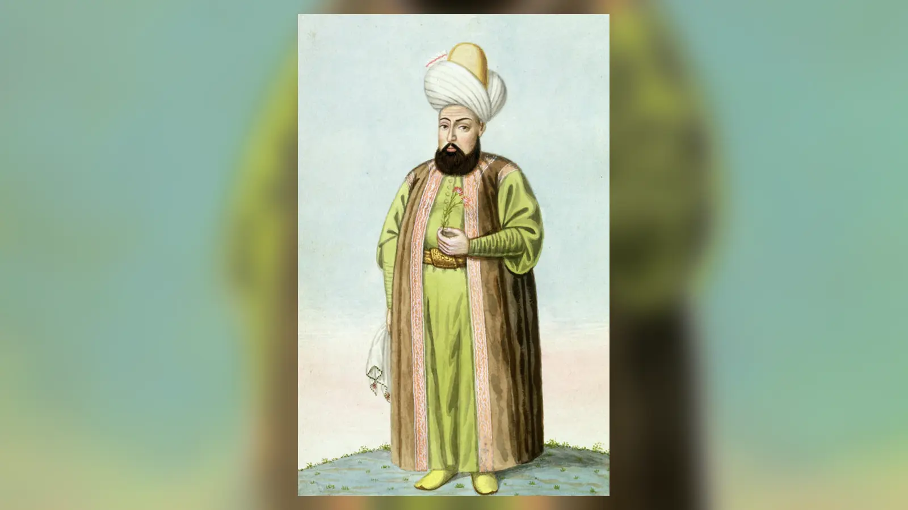
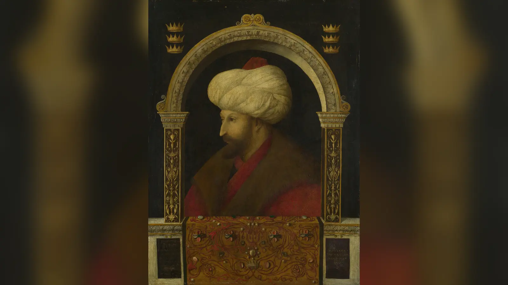
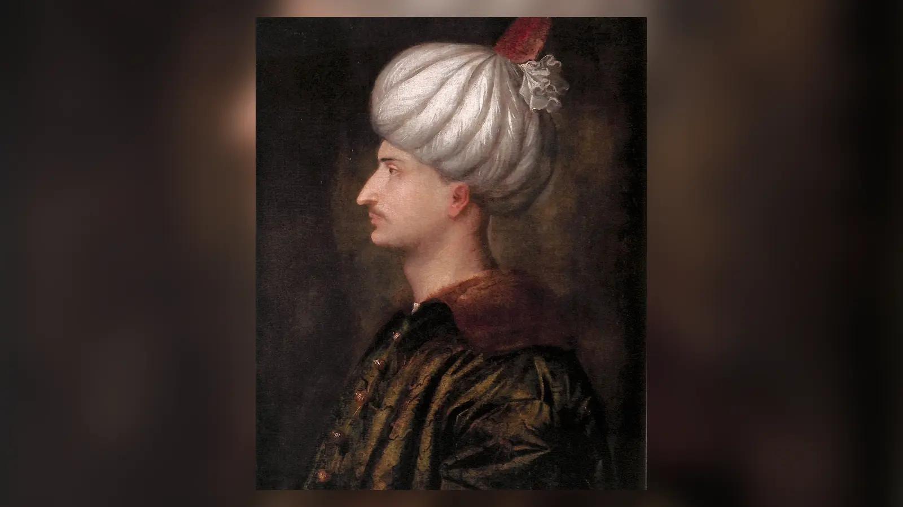
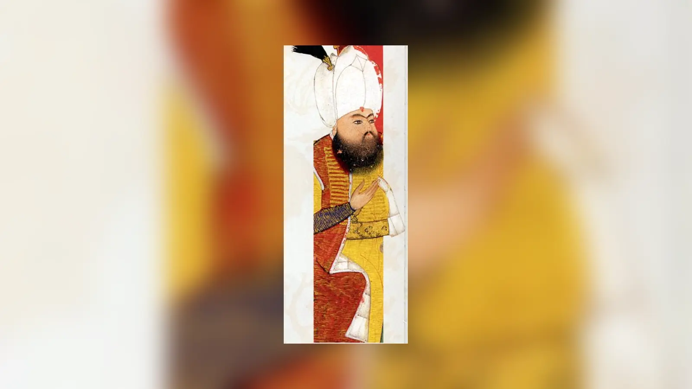
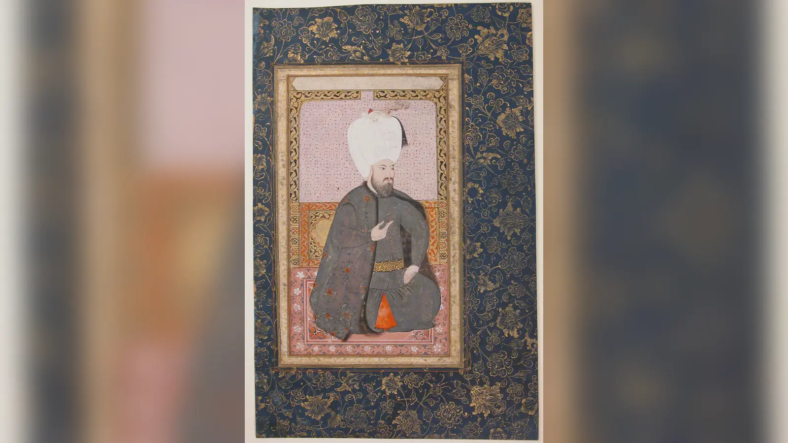
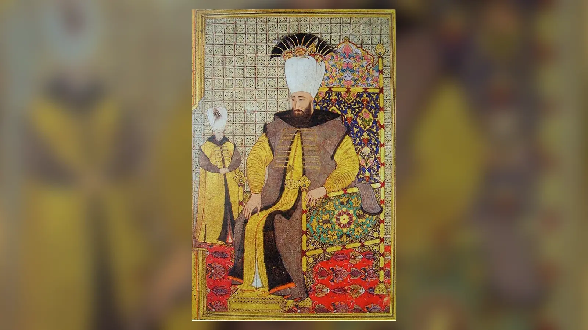
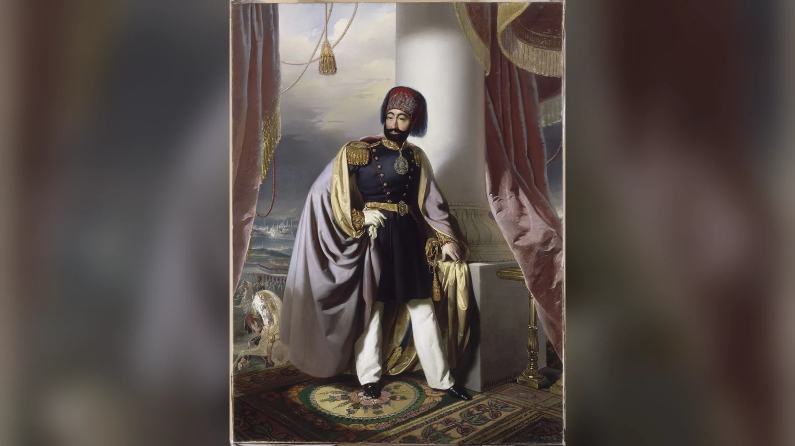
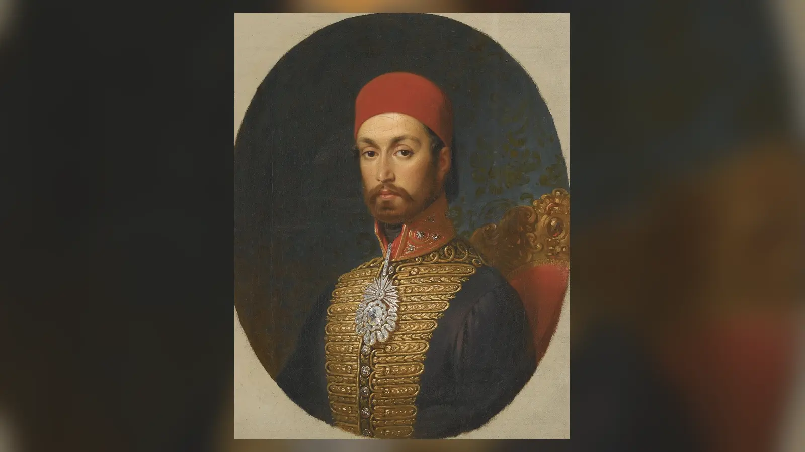
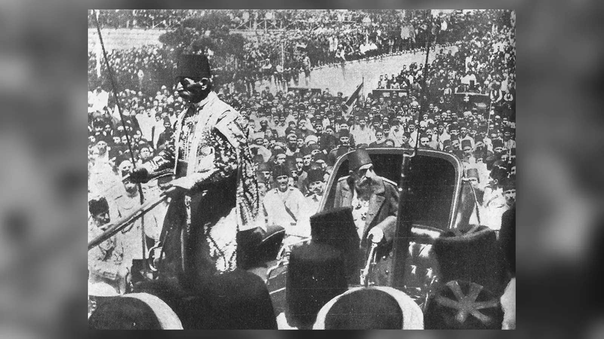
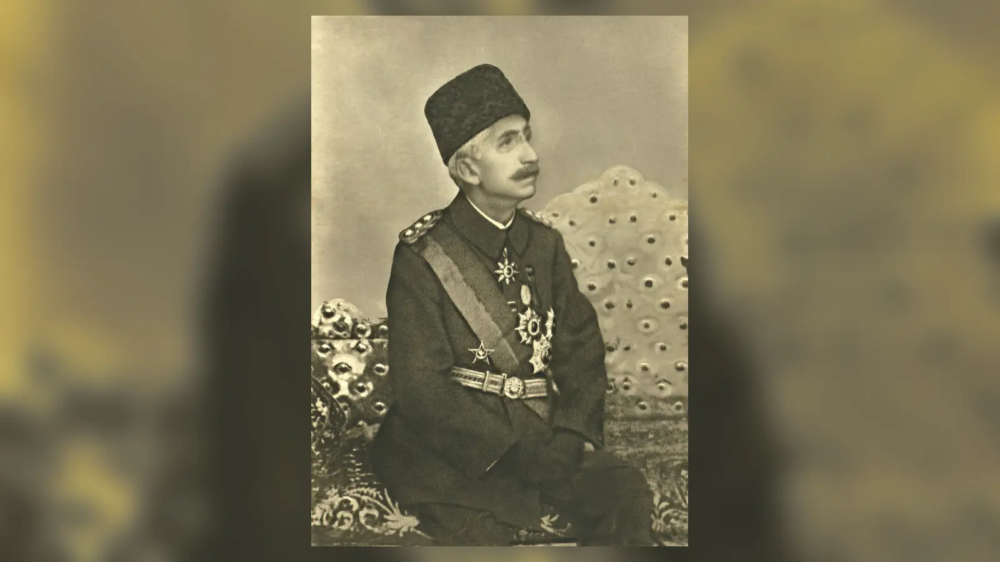

Osmanlı tahtında yaklaşık altı yüzyıl boyunca savaş meydanında ölen bir hükümdar da oturdu, altı yaşında tahta çıkarılan bir çocuk da; kendi isteğiyle tahtı bırakıp geri dönen sultanlar, darbeyle indirilenler ve yetkileri anayasa ile sınırlanan hükümdarlar da aynı hanedanın parçasıydı. Bu yüzden Osmanlı padişahları sırasıyla okunduğunda karşımıza yalnız 36 isim değil, hükümdarlığın anlamının sürekli değiştiği uzun bir siyasi tarih çıkar.
Geleneksel listede 36 Osmanlı padişahı vardır. İlk hükümdar Osman Gazi, son hükümdar VI. Mehmed Vahdeddin’dir. 1299 kuruluş için geleneksel tarihtir; erken Osmanlı Beyliği’nin ortaya çıkışı tek bir günde gerçekleşmiş bir “devlet kurma” olayı değildir. Erken kaynakların önemli bölümü olaylardan daha sonra kaleme alınmıştır. Buna karşılık 1 Kasım 1922’de saltanatın kaldırılması modern meclis kayıtlarıyla kesin biçimde izlenebilen hukuki bir sondur.
“Kuruluş, yükselme, duraklama, gerileme, dağılma” şeması öğretici bir kolaylık sağlasa da güncel tarihçilik için fazla mekaniktir. XVI. yüzyıl sonrasını kesintisiz çöküş saymak maliye, diplomasi, bürokrasi, savaş teknolojisi ve merkez-taşra ilişkilerindeki uyarlanmayı gözden kaçırır. Buradaki anlatı bir hükümdardan ötekine geçen imkân ve krizleri izler. Yeni padişah bazen bir fetih ordusu, bazen boşalmış bir hazine, bazen de kendi hareket alanını daraltan güçlü bir saray çevresi devraldı.
Osmanlı Padişahları Sıralaması ve Saltanat Yılları
| Sıra | Padişah | Saltanat yılları | Yaklaşık saltanat süresi | Dönemini tanımlayan gelişme |
|---|---|---|---|---|
| 1 | Osman Gazi | yak. 1299–1324/1326 | Yaklaşık 25–27 yıl* | Uç beyliğinin hanedan çekirdeğine dönüşmesi |
| 2 | Orhan Gazi | 1324/1326–1362 | Yaklaşık 36–38 yıl* | Bursa, İznik ve Rumeli’ye kalıcı geçiş |
| 3 | I. Murad | 1362–1389 | Yaklaşık 27 yıl | Balkan genişlemesi ve merkezî askerî yapı |
| 4 | I. Bayezid (Yıldırım) | 1389–1402 | Yaklaşık 13 yıl | Hızlı merkezileşme, Niğbolu ve Ankara yenilgisi |
| 5 | I. Mehmed (Çelebi) | 1413–1421 | Yaklaşık 8 yıl | Fetret sonrasında siyasi birliğin onarılması |
| 6 | II. Murad | 1421–1444; 1446–1451 | Toplam yaklaşık 28 yıl | Varna, II. Kosova ve iki ayrı saltanat |
| 7 | II. Mehmed (Fatih) | 1444–1446; 1451–1481 | Toplam yaklaşık 32 yıl | İstanbul’un fethi ve merkezî imparatorluk düzeni |
| 8 | II. Bayezid | 1481–1512 | Yaklaşık 31 yıl | Cem Sultan krizi ve hanedan dengesi |
| 9 | I. Selim (Yavuz) | 1512–1520 | Yaklaşık 8 yıl | Safevî ve Memlük cephelerinde büyük genişleme |
| 10 | I. Süleyman (Kanuni) | 1520–1566 | Yaklaşık 46 yıl | Uzun savaşlar, hukuk ve imparatorluk düzeni |
| 11 | II. Selim | 1566–1574 | Yaklaşık 8 yıl | Saraydan yönetim, Kıbrıs ve İnebahtı |
| 12 | III. Murad | 1574–1595 | Yaklaşık 20 yıl | Uzun İran ve Habsburg mücadeleleri |
| 13 | III. Mehmed | 1595–1603 | Yaklaşık 9 yıl | Eğri-Haçova ve veraset şiddeti |
| 14 | I. Ahmed | 1603–1617 | Yaklaşık 14 yıl | Zitvatorok ve verasette dönüşüm |
| 15 | I. Mustafa | 1617–1618; 1622–1623 | Toplam yaklaşık 1 yıl 4 ay | Kardeş kolundan tahta geçiş ve iki kısa saltanat |
| 16 | II. Osman (Genç Osman) | 1618–1622 | Yaklaşık 4 yıl | Hotin krizi ve padişahın öldürülmesi |
| 17 | IV. Murad | 1623–1640 | Yaklaşık 16 yıl | Sert merkezileşme ve Bağdat’ın geri alınması |
| 18 | İbrahim | 1640–1648 | Yaklaşık 8 yıl | Saray siyaseti, Girit savaşı ve hal |
| 19 | IV. Mehmed (Avcı) | 1648–1687 | Yaklaşık 39 yıl | Köprülüler, Kandiye ve II. Viyana sonrası kriz |
| 20 | II. Süleyman | 1687–1691 | Yaklaşık 3 yıl 7 ay | Uzun kafes hayatından sonra savaş döneminde cülûs |
| 21 | II. Ahmed | 1691–1695 | Yaklaşık 3 yıl 7 ay | Savaş baskısı ve mali dönüşüm |
| 22 | II. Mustafa | 1695–1703 | Yaklaşık 8 yıl 6 ay | Zenta, Karlofça ve Edirne Vakası |
| 23 | III. Ahmed | 1703–1730 | Yaklaşık 27 yıl | Diplomasi, matbaa ve Patrona Halil İsyanı |
| 24 | I. Mahmud | 1730–1754 | Yaklaşık 24 yıl | İsyan sonrası istikrar ve askerî yenilik |
| 25 | III. Osman | 1754–1757 | Yaklaşık 2 yıl 10 ay | Kısa saltanat ve kafes sisteminin gölgesi |
| 26 | III. Mustafa | 1757–1774 | Yaklaşık 16 yıl | Reform ihtiyacı ve Rus savaşı |
| 27 | I. Abdülhamid | 1774–1789 | Yaklaşık 15 yıl | Küçük Kaynarca sonrası yeniden yapılanma |
| 28 | III. Selim | 1789–1807 | Yaklaşık 18 yıl | Nizam-ı Cedid ve reform karşıtı koalisyon |
| 29 | IV. Mustafa | 1807–1808 | Yaklaşık 1 yıl 2 ay | Darbe ortamı ve Alemdar Mustafa Paşa |
| 30 | II. Mahmud | 1808–1839 | Yaklaşık 31 yıl | Yeniçerilerin kaldırılması ve merkezileşme |
| 31 | Abdülmecid | 1839–1861 | Yaklaşık 22 yıl | Tanzimat, Islahat Fermanı ve Kırım Savaşı |
| 32 | Abdülaziz | 1861–1876 | Yaklaşık 15 yıl | Reformlar, dış borç krizi ve hal |
| 33 | V. Murad | 1876 | 93 gün | 93 günlük en kısa saltanat |
| 34 | II. Abdülhamid | 1876–1909 | Yaklaşık 32 yıl 8 ay | Kanun-ı Esasi, merkezî kontrol ve 1908 |
| 35 | V. Mehmed Reşad | 1909–1918 | Yaklaşık 9 yıl | İttihat ve Terakki, Balkan Savaşları ve I. Dünya Savaşı |
| 36 | VI. Mehmed Vahdeddin | 1918–1922 | Yaklaşık 4 yıl 4 ay | İşgal, Millî Mücadele ve saltanatın kaldırılması |
*İlk iki hükümdar için tabloda geleneksel 1299 başlangıcı ve farklı iktidar devri tarihleri esas alınmıştır; bunlar kesin görev süreleri değildir. Ertuğrul’un ardından beyliğin başına geçiş ile bağımsız hanedan hükümdarlığının başlangıcı aynı tarih olarak kabul edilmez. Diğer saltanat süreleri de gün hesabıyla kesin toplamlar yerine yaklaşık verilmiştir; özellikle erken dönem başlangıç ve bitiş tarihlerinde kaynak farklılıkları vardır. II. Murad, II. Mehmed ve I. Mustafa’nın iki ayrı saltanat dönemi ayrıca gösterilmiştir.
Osmanlı Tahtında Veraset Sistemi Nasıl Değişti?
Osmanlı tahtı başlangıçta kesin bir büyük oğul verasetiyle işlemiyordu. Hanedanın erkek üyeleri hükümdarlık iddiasında bulunabiliyor ve sonuca siyasi-askerî mücadele karar verebiliyordu. Şehzadelerin sancaklara gönderilmesi yönetim tecrübesi sağlıyor, fakat hükümdar öldüğünde kardeşler arasında ölümcül rekabeti de kolaylaştırıyordu.
Fatih Kanunnâmesi’ndeki kardeş katli hükmü bu soruna “nizâm-ı âlem” gerekçesiyle sert bir hanedan çözümü üretme girişimiydi. Uygulama her saltanatta aynı değildi. Onu ne zamandan bağımsız bir gelenek diye normalleştirmek ne de dönemin taht savaşlarını yok sayarak açıklamak yeterlidir: siyasi parçalanmayı önleme iddiasının bedeli hanedan üyelerinin hayatıydı.
XVI. yüzyıl sonunda şehzadelerin sancağa çıkması sona erdi. I. Ahmed’in kardeşi Mustafa’yı hayatta bırakması ve 1617’de Mustafa’nın tahta çıkmasıyla ekberiyet yönündeki dönüşüm belirginleşti. Hanedanın yaşça kıdemli erkek üyesini öne çıkaran düzen kardeş katlini azalttı, fakat “kafes” hayatını güçlendirdi; bazı şehzadeler onlarca yıl siyasi tecrübeden uzak yaşadı.
XVII. yüzyılda valide sultanlar, sadrazamlar, şeyhülislamlar, yeniçeriler ve saray ağaları kriz anlarında cülûs ve hal süreçlerinde etkili olabildi. XIX. yüzyılda ise nezaretler, büyüyen bürokrasi, anayasa, meclis, basın, dış borç ve uluslararası diplomasi padişahlığın çevresindeki siyasi alanı değiştirdi. Osman Gazi’nin savaşçı hanedan liderliği ile Vahdeddin’in anayasa, hükümet ve işgal koşulları içindeki konumu bu nedenle aynı kurumun iki çok farklı tarihsel biçimidir.
Beylikten Devlete: İlk Osmanlı Hükümdarları
1. Osman Gazi
Erken Osmanlı kaynaklarının sınırlılığı nedeniyle saltanatının başlangıcı ve sonu kesin günlerle verilemez. 1299 geleneksel kuruluş tarihidir; beyliğin oluşumu tek bir günde gerçekleşmiş bir devlet kurma töreni olarak düşünülmemelidir.
Bizans sınırındaki uç çevresinde güç kazandı; 1302 Bafeus/Koyunhisar savaşı onun bölgesel ağırlığını gösteren çağdaş Bizans anlatılarıyla ilişkilendirilebilen önemli olaylardandır. Daha geç kroniklerdeki Osman’ın rüyası gibi hikâyeler ise hanedanın meşruiyet hafızasını gösterir, çağdaş kayıt değildir.
Osman’ın çevresinde toplananların hepsini tek kökenden gelen, baştan beri aynı hedefe bağlı bir ordu gibi düşünmek güçtür. Uç bölgesinin savaşçıları, yerel müttefikleri ve dinî çevreleri fetihlerden farklı beklentiler taşıyordu. Kalıcılığı sağlayan, bu insanları bir araya getirebilmesi ve kazanılan yerlerde sürekli gelir ile yönetim ilişkisi kurabilmesiydi. Sonraki hanedan tarihçiliği bu çok aktörlü başlangıcı kurucunun kişiliği çevresinde daha bütünlüklü bir hikâyeye dönüştürdü.
Orhan’ın devralabileceği kalıcı bir hanedan çekirdeği bıraktı. Bursa’nın fethi sırasında yönetimin fiilen Orhan’a geçmiş olabileceği için ölüm ve devir tarihlerinde kaynak farkları bulunur.

2. Orhan Gazi
Osman’ın son yıllarında yönetimde ağırlık kazandı ve Bursa’nın alınmasıyla yeni bir merkez elde etti. İznik ve İzmit’in fethi, Osmanlıların yalnız kırsal bir uç gücü değil kentleri yöneten bir siyasi yapı hâline gelmesini hızlandırdı.
İznik’te medrese, Bursa’da vakıf ve imaretler gibi kurumlar gelişti. Bizans iç mücadelelerinden yararlanan Osmanlı kuvvetleri Rumeli’ye geçti; Gelibolu çevresindeki tutunma Balkan fetihlerinin kalıcı zemini oldu.
1329 Pelekanon Savaşı’nda Bizans imparatorunun ordusuna karşı kazanılan başarı, İznik üzerindeki baskıyı artırdı; şehir 1331’de alındı. Karesi topraklarının katılması ise batı Anadolu’daki insan ve denizcilik kaynaklarını genişletti. Rumeli’ye geçişi tek bir kahramanlık hareketine indirmek yerine Bizans iç savaşlarıyla, askerî yardımlaşmayla ve 1354’te Gelibolu’da oluşan elverişli şartlarla birlikte okumak gerekir.
1362’de öldüğünde devletin ağırlık merkezi Bursa’ydı fakat hanedan artık Avrupa yakasında da kalıcıydı. Orhan dönemi, beylikten kurumsallaşmış bölgesel devlete geçişin belirginleştiği aşamadır.
3. I. Murad
Orhan’dan Rumeli’de büyüyen bir siyasi yapı devraldı. Edirne’nin merkezî önem kazanması ve Balkanlardaki ilerleme, hükümdarlığın ölçeğini önceki kuşaktan daha ileri taşıdı.
Kapıkulu teşkilatının erken gelişimi, timar düzeninin yaygınlaşması ve fethedilen bölgelerin gelir-asker düzenine bağlanması dönemin kalıcı sonuçlarıdır. Osmanlı genişlemesi savaş kadar tâbilik, ittifak ve yerel hanedanlarla ilişkilere de dayanıyordu.
Balkanlarda ilerlemek bütün yerel beyleri hemen ortadan kaldırmak anlamına gelmiyordu. Vergi ve asker vermeyi kabul eden Hristiyan hükümdarlar bir süre kendi topraklarını yönetebildi. Murad’ın başarısı, doğrudan fetih ile bu tâbilik ilişkilerini birlikte kullanmasındaydı. Böylece Osmanlı ordusunun eriştiği alanla merkezden her ayrıntısı yönetilen toprakların sınırı henüz birbirine eşit değildi.
1389 I. Kosova Savaşı Osmanlı zaferiyle sonuçlandı; Murad savaşın ardından öldürüldü. Savaş meydanında ölen tek Osmanlı padişahı olarak hafızada kaldı ve yerine Bayezid geçti.
4. I. Bayezid (Yıldırım)
Kosova’nın hemen ardından tahta çıkan Bayezid, Anadolu beyliklerini merkeze bağlama ve Balkanlardaki hâkimiyeti sıkılaştırma konusunda son derece hızlı davrandı. İstanbul üzerindeki baskıyı artırdı ve 1396 Niğbolu’da Haçlı ordusunu yendi.
Anadolu’daki genişleme Timur’un batıya ilerleyen gücüyle çatıştı. 1402 Ankara Savaşı’nda Osmanlı ordusu yenildi ve Bayezid esir düştü; kafese kapatıldığı gibi popüler ayrıntıların önemli bölümü daha sonraki anlatılarda büyütülmüştür.
Bayezid’in Anadolu’da süratle bağladığı beyliklerin eski hükümdarları Timur’un çevresinde destek aradı. Merkezileşme böylece yalnız sınırı büyütmedi, dışarıda kullanılabilecek rakipler de yarattı. Ankara yenilgisi sonrasında bu beyliklerin yeniden ortaya çıkabilmesi, Osmanlı hâkimiyetinin her yerde aynı ölçüde kökleşmediğini gösterdi. Niğbolu’daki büyük askerî başarı ile altı yıl sonraki ağır yenilgi arasındaki karşıtlık, tek bir zaferin kalıcı siyasi güvenlik sağlamadığını hatırlatır.
1403’te esaret altında öldü. Yenilginin asıl sonucu hanedan otoritesinin parçalanması ve oğulları arasında 1413’e kadar sürecek Fetret Devri’nin başlamasıydı.
Fetret Devri neden 36 padişah listesine eklenmez?
1402 Ankara Savaşı sonrasında Bayezid’in oğulları Süleyman, İsa, Musa ve Mehmed farklı bölgelerde iktidar mücadelesi yürüttü. Süleyman ve Musa başta olmak üzere bazı şehzadeler fiilen hükümdarlık yetkisi kullandı; bu nedenle dönemi “padişahsız on bir yıl” diye geçmek yanıltıcıdır. Ancak sonraki hanedan geleneği mücadeleyi kazanan Mehmed’i I. Mehmed adıyla meşru devam çizgisine yerleştirdi. Standart 36 padişah sayısı bu kanonik hanedan sıralamasını izler; Fetret’teki diğer şehzadelerin siyasi varlığını inkâr etmez.
5. I. Mehmed (Çelebi)
Bayezid’in oğulları arasındaki on bir yıllık mücadeleden galip çıkarak 1413’te tek hükümdar oldu. Hanedanın parçalanma tehlikesinden çıkarılmasındaki rolü nedeniyle sıkça “ikinci kurucu” diye anılır.
Önceliği yeni fetihlerden çok Rumeli ve Anadolu’daki otoriteyi yeniden bağlamaktı. Şeyh Bedreddin çevresindeki hareketler, Börklüce Mustafa isyanı ve Venedik’le deniz çatışmaları saltanatın ciddi meseleleriydi.
Mehmed’in yeniden birleşmeyi sağlaması bütün rakipleri ve toplumsal gerilimleri ortadan kaldırmadı. Anadolu ile Rumeli arasında gidip gelen askerî ittifaklar, eski beylerin talepleri ve hanedan mensuplarının iddiaları yönetimi meşgul etti. Döneminin önemi, devletin başlangıçtaki sınırlarına dönmesinden çok, on bir yıllık mücadeleye rağmen iki kıtadaki yönetim bağlarının yeniden işler hâle getirilmesindeydi. Bu, sonraki genişlemenin maddi temelini korudu.
1421’de öldüğünde Fetret’in açık iç savaşı sona ermişti fakat veraset sorunu çözülmüş değildi. Oğlu II. Murad yeni hanedan rakipleriyle mücadele etmek zorunda kaldı.
6. II. Murad
Tahta çıktığında Bizans’ın desteklediği hanedan rakipleri ve Anadolu beylikleriyle uğraştı. Zamanla Balkanlardaki Osmanlı konumunu yeniden sağlamlaştırdı.
1444’te tahtı genç oğlu Mehmed’e bıraktı; Avrupa’da yeni Haçlı seferi hazırlanırken geri dönerek Varna’da zafer kazandı. 1446’da yeniden fiilen tahta geçti ve 1448 II. Kosova zaferi Balkan üstünlüğünü pekiştirdi.
Varna için ordunun başına dönmesiyle ikinci saltanatının başlamasını aynı olay saymamak gerekir. 1444’te savaşın komutasını üstlendiğinde hükümdar hâlâ genç Mehmed’di; taht değişikliği 1446’da gerçekleşti. Bu ayrım, padişah unvanı ile fiilî askerî otoritenin kısa bir süre farklı kişilerde bulunabildiğini gösterir. II. Murad’ın geri dönüşünde Çandarlı Halil Paşa ve kapıkulu çevrelerinin tercihleri de etkiliydi.
1451’de öldüğünde oğlu II. Mehmed ikinci kez tahta çıktı. Murad’ın bıraktığı askerî ve siyasi denge, İstanbul’un fethinin temel ön koşullarından birini oluşturdu.
İstanbul’un Fethinden İmparatorluk Düzenine
7. II. Mehmed (Fatih)
İlk saltanatı çocuk yaşta kısa sürdü; 1451’de ikinci kez tahta çıktığında hedefleri ve hareket alanı çok daha genişti. 1453’te İstanbul’un fethi Bizans İmparatorluğu’na son verirken Osmanlı hükümdarlığının meşruiyet ve ölçeğini değiştirdi.
Sırbistan, Mora, Trabzon ve Bosna yönündeki genişleme; Karadeniz ticaret merkezlerinin denetimi ve Anadolu’daki rakip güçlerin bastırılması merkezî imparatorluk düzenini güçlendirdi. Kanunnâme, saray ve kul sistemi padişahın merkezdeki ağırlığını artırdı; kardeş katline ilişkin meşhur hüküm de onun kanunnâmesiyle ilişkilidir.
Fetih sonrasında asıl mesele, nüfusu azalmış İstanbul’u yeniden büyük bir başkent hâline getirmekti. İskân, vakıflar, ticaret yapıları ve saray inşası askerî zaferi gündelik yönetime çevirdi. Fatih’in Rum, Latin ve İslamî hükümdarlık gelenekleriyle kurduğu ilişki de bu yeni ölçeğe uygundu. Bellini gibi sanatçıların saraya gelişi, hükümdarlık imgesinin Avrupa’daki portre diliyle de ifade edilmeye başladığını gösterir.
1481’de yeni bir sefer için çıktığı Anadolu yakasında, Gebze yakınlarında öldü; İtalya’daki Otranto harekâtı da henüz sonuçlanmamıştı. Ardından Bayezid-Cem mücadelesi başladı; bu da güçlü merkezileşmenin veraset sorununu ortadan kaldırmadığını gösterdi.

8. II. Bayezid
Fatih’in ölümünün ardından kardeşi Cem’le taht mücadelesini kazanarak hükümdar oldu. Cem’in Rodos şövalyeleri ve Avrupa güçlerinin elinde tutulması, Osmanlı hanedan sorununu yıllarca uluslararası diplomasinin aracına çevirdi.
Venedik savaşları, deniz gücündeki gelişmeler ve doğuda Safevî etkisinin yükselişi dönemin temel meseleleriydi. İberya’dan çıkarılan Yahudilerin Osmanlı topraklarına gelişi de Akdeniz dünyasındaki önemli nüfus hareketlerinden biriydi.
Cem’in rakip bir şehzade olarak yaşaması, Bayezid’in Avrupa siyasetine sürekli bir pazarlık unsuru ekledi. Rakip hükümdarlar Cem’i kullanma ihtimalini gündemde tutarken Osmanlı yönetimi onu denetim altında tutacak diplomatik düzenlemeler aradı. Saltanatının sonlarına doğru 1511 Şahkulu İsyanı ise doğudaki Safevî rekabetinin Anadolu’daki toplumsal ve dinî gerilimlerle birleşebildiğini gösterdi; veraset mücadelesi bu baskı altında keskinleşti.
Son yılları oğulları Ahmed, Korkut ve Selim arasındaki mücadeleyle geçti. Yeniçeri desteğini de kazanan Selim üstün gelince Bayezid 1512’de tahtı bırakmak zorunda kaldı.
9. I. Selim (Yavuz)
Babasının son yıllarındaki veraset mücadelesinden galip çıktı ve kısa saltanatında imparatorluğun yönünü doğu ile güneye çevirdi. 1514 Çaldıran’da Şah İsmail’e karşı kazanılan zafer Safevî nüfuzuna ağır darbe vurdu.
1516 Mercidâbık ve 1517 Ridâniye zaferleri Suriye ve Mısır’ı Osmanlı hâkimiyetine kattı; Hicaz üzerindeki siyasi nüfuz da Osmanlı hükümdarlığına bağlandı. Abbâsî halifesinin hilafeti törenle Selim’e devrettiği popüler hikâye çağdaş kaynaklarla kesin biçimde doğrulanmış değildir.
Çaldıran’ı yalnız iki hükümdarın savaşı olarak görmek eksik kalır. Anadolu’daki Kızılbaş toplulukları, Safevî bağlılığı ve merkezî yönetimin güvenlik kaygıları çatışmanın iç boyutunu oluşturuyordu; baskı ve şiddet bu siyasetin parçasıydı. Mısır’ın alınmasıyla ise köklü Memlük yönetim ve vergi ilişkilerinin idaresi gündeme geldi. Selim’in fetihleri, halefine genişleme kadar çok farklı bölgeleri birlikte yönetme sorumluluğu da bıraktı.
1520’de öldüğünde oğlu Süleyman büyük bir mali, askerî ve coğrafi kaynak tabanı devraldı. Sekiz yıllık saltanat, Osmanlıların İslam dünyasındaki konumunu köklü biçimde değiştirdi.
10. I. Süleyman (Kanuni)
Yaklaşık kırk altı yıllık saltanatı Osmanlı tarihinin en uzunudur. Belgrad, Rodos, Mohaç, Macaristan-Habsburg mücadelesi, Irakeyn seferleri ve Akdeniz rekabeti aynı hükümdarlık dönemine sığdı.
“Kanuni” unvanı örfî hukuk düzenlemelerindeki yerini yansıtır; bu hukuk üretimi padişahın tek başına işi değil, Ebüssuûd Efendi gibi hukukçuların ve geniş bürokrasinin katkısıyla yürüyen bir sistemdi. Pargalı İbrahim Paşa’nın idamı, Şehzade Mustafa’nın öldürülmesi ve Hürrem Sultan çevresindeki veraset siyaseti sarayın diğer yüzünü oluşturdu.
Süleyman’ın uzun saltanatında yalnız sınırlar büyümedi; başkentte mimari ve vakıf düzeni de gelişti. Mimar Sinan’ın Süleymaniye Külliyesi, hükümdarın askerî gücünü cami, eğitim, yardım ve şehir hayatıyla ilişkilendiren bir imparatorluk yapısıydı. Bunun yanında hanedanın geleceği giderek sertleşen bir rekabet alanına dönüştü. Mustafa’nın ardından Bayezid’in de saf dışı bırakılması, tahtın Selim’e geçişini hazırlarken saray ailesinin ödediği bedeli büyüttü.
1566 Zigetvar kuşatması sırasında öldü ve ölüm haberi tahta geçiş düzenlenene kadar bir süre gizlendi. Dönemini “zirve”, sonrasını otomatik “çöküş” saymak sonraki yüzyıllardaki dönüşümü fazla basitleştirir.

Saray, Savaş ve Veraset Krizleri
11. II. Selim
Kanuni’nin ardından tahta çıkan II. Selim, büyük kara seferlerine ordunun başında gitmeyen hükümdar modeliyle öne çıktı. Sokullu Mehmed Paşa ve merkez bürokrasisi yönetimde büyük ağırlık taşıdı.
1570–1571 Kıbrıs seferi adayı Osmanlı hâkimiyetine soktu; hemen ardından 1571 İnebahtı’da Osmanlı donanması ağır yenilgi aldı. Buna rağmen donanma yeniden kuruldu ve Venedik 1573’te Kıbrıs’ın Osmanlı egemenliğini tanıdı.
Edirne’de Mimar Sinan’a yaptırdığı Selimiye Camii, döneminin en kalıcı hükümdarlık işaretidir. 1574’te Tunus’un Osmanlı hâkimiyetine alınması da İnebahtı sonrasında Akdeniz gücünün bütünüyle ortadan kalkmadığını gösterir. Selim’i yalnız sefere çıkmamasıyla veya kişisel alışkanlıklarına ilişkin lakaplarla anlatmak, onun devrinde işlemeye devam eden karar, donanma ve vakıf mekanizmalarını gözden kaçırır.
1574’te öldü. Saltanatı, padişahlığın bizzat savaş meydanında bulunmaktan saray ve bürokrasi üzerinden yönetmeye doğru değişiminin belirgin simgelerinden biridir.
12. III. Murad
Manisa’da uzun sancak tecrübesinin ardından tahta çıktı. Safevîlerle savaş Kafkasya ve İran cephesinde büyük kaynak tüketirken 1593’te Habsburglarla başlayan Uzun Savaş ölümünden sonra da sürdü.
Saray hanesi büyüdü; Nurbânû ve Safiye Sultan gibi hanedan kadınları diplomatik ve siyasi ağlarda görünür hâle geldi. Bunu “kadınların devleti ele geçirmesi” diye anlatmak yerine saray himaye ağlarının büyümesiyle açıklamak daha sağlıklıdır.
1582’de oğlu Mehmed için düzenlenen büyük sünnet şenliği, sarayın esnafı, askerî grupları ve şehir halkını bir araya getiren temsil gücünü gösterdi. Bu törenin resimli kayıtları, saltanatın yalnız savaş haberleriyle tanınmadığını hatırlatır. Buna karşılık asker maaşları ve akçenin değeri çevresindeki gerilimler, büyüyen saray ile savaş yükünün mali sınırlarını görünür kılıyordu. Gösterişli merasim ile ekonomik baskı aynı dönemin parçalarıydı.
1595’te öldüğünde savaşlar, para düzeni ve askerî sistem üzerinde ciddi baskı vardı. Devlet genişlemeye devam ederken genişlemenin maliyeti de klasik kurumları zorluyordu.
13. III. Mehmed
Sancakta yönetim tecrübesi kazanarak tahta çıkan son padişahtır. Cülûsunda kardeşlerinin öldürülmesi, veraset güvenliği adına uygulanan kardeş katlinin en sarsıcı örneklerinden biri oldu.
1596 Eğri seferine bizzat katıldı; Eğri’nin alınmasını Haçova zaferi izledi. Buna rağmen Uzun Savaş ve Anadolu’daki Celâlî hareketleri maliye, asker toplama ve taşra düzeni üzerinde ağır baskı yarattı.
1595’te tahta çıkışında on dokuz kardeşinin öldürtülmesi, yalnız sayısıyla değil yarattığı tepkiyle de veraset tarihinin ağır olaylarındandır. Sancak tecrübesi olan bir hükümdarın kendi oğullarını aynı düzene göndermemesi, taşrada alternatif iktidar merkezleri doğmasını önleme arayışıyla ilişkiliydi. Fakat tehlikeyi saray içinde sınırlamak başka bir sorun yarattı: sonraki hükümdarlar taşra idaresini ve ordu çevrelerini tanımadan devletin başına geçecekti.
1603’te öldüğünde oğlu Ahmed gençti ve şehzadeler artık sancakta yetişmiyordu. Bu yeni saray düzeni bir sonraki saltanatta veraset sistemini kökten değiştirecekti.

14. I. Ahmed
On üç yaşında tahta çıktı ve kardeşi Mustafa’yı öldürtmedi. Bu karar tek başına bir gecede “ekber ve erşed kanunu” çıkarmak değildi; fakat kardeşin hayatta tutulması hanedan verasetinde yeni bir yol açtı.
1606 Zitvatorok Antlaşması Habsburglarla uzun savaşı kapattı ve diplomatik dilde değişim yarattı. Safevî savaşı ve Celâlî sorunları sürerken İstanbul’da Sultanahmet Camii gibi büyük bir mimari miras bıraktı.
Ahmed’in kardeşini hayatta tutmasında hanedanın o sıradaki dar erkek nüfusu ve padişahın henüz çocuğunun bulunmaması da etkiliydi. Bu yüzden kararı yalnız kişisel merhametle açıklamak yetersizdir. Öte yandan Celâlî hareketlerinin bastırılması, Kuyucu Murad Paşa’nın çok sert yöntemleriyle yürütüldü. İstanbul’daki büyük cami projesiyle Anadolu’daki şiddet ortamını birlikte görmek, saltanatı mimari bir başarıya indirgemeyi önler.
1617’de ölünce oğlu yerine kardeşi Mustafa’nın tahta çıkması, babadan oğula zorunlu geçişten uzaklaşmanın açık işareti oldu. Kardeş katli azalırken kafes düzeninin güçleneceği yeni dönem başladı.

15. I. Mustafa
I. Ahmed’in kardeşi olarak tahta çıkması, Osmanlı tarihinde oğul yerine kardeşin hükümdar olduğu temel kırılmadır. Kaynaklar davranış ve yönetim kapasitesi hakkında sorunlardan söz etse de modern psikiyatrik teşhisleri kesin biçimde geriye uygulamak doğru değildir.
İlk saltanatı birkaç ay sürdü ve II. Osman lehine indirildi. Genç Osman’ın 1622’de öldürülmesinin ardından ikinci kez tahta çıkarıldı; bu durum askerî ve saray gruplarının veraset üzerindeki etkisini gösterir.
Mustafa’nın tahta çıkarılması, sarayın yönetmeye elverişlilik ile hanedanın devamı arasında seçim yapmak zorunda kaldığını gösterir. İlk saltanatından sonra hayatta tutulması da önemlidir: tahttan indirilen hükümdarın öldürülmesi artık her durumda zorunlu görülmüyordu. Fakat sağ kalan eski padişah, kriz anında yeniden kullanılabilecek bir adaydı. 1622’deki dönüşü bu imkânın ne kadar somut olduğunu ortaya koydu.
1623’te yeniden hal edildi ve IV. Murad tahta geçti. Mustafa’nın iki saltanatı, kafes hayatının hükümdar yetiştirme üzerindeki sonuçlarını görünür kıldı.
16. II. Osman (Genç Osman)
Genç yaşta tahta çıkan Osman’ın 1621 Hotin Seferi, kapıkulu askerleriyle ilişkisini daha da gerdi. Sonraki kaynaklarda yeniçerileri kaldırıp farklı bir ordu kuracağına ilişkin planlar çeşitli ayrıntılarla anlatılır; bütün ayrıntıları aynı kesinlikte kabul etmek mümkün değildir.
1622’de hac niyetiyle İstanbul’dan ayrılma hazırlığı askerlerin kuşkusunu büyüttü. İsyan sonucunda tahttan indirildi ve Yedikule’de öldürüldü.
Osman’ın öldürülmesi, hükümdarın her emrinin askerî kurumlar tarafından kendiliğinden uygulanmadığını açığa çıkardı. Kapıkullarının maaş, itibar ve gelecek kaygılarıyla saray çevrelerinin hesapları aynı isyanda birleşebildi. Bununla birlikte sonradan kurulan reformcu kahraman imgesi, onun kardeşi Mehmed’i Hotin seferi öncesinde öldürtmesi gibi sert hanedan kararlarını görünmez kılmamalıdır. Genç yaşı siyasi sorumluluğunu ortadan kaldırmadığı gibi trajik ölümü de bütün saltanatını açıklamaz.
Bir padişahın kendi askerleri tarafından öldürülmesi hanedan düzeninde büyük sarsıntı yarattı. Olayı yalnız “reformcu padişah-gerici yeniçeri” ikiliğine indirgemek saray, ulema ve askerî hizipleri görünmez kılar.
17. IV. Murad
Çocuk yaşta tahta çıktığında askerî isyanlar ve merkezî otorite sorunları vardı; ilk yıllarda Kösem Sultan’ın valide sultan olarak etkisi yüksekti. Yetişkinliğinde yönetimi şahsen ele aldı ve çok sert disiplin yöntemleri kullandı.
Tütün, içki ve gece dolaşımı yasakları tarihsel temele sahiptir; fakat kılık değiştirip rastgele insan avladığı türden popüler hikâyeler belgeyle efsaneyi karıştırabilir. 1638 Bağdat seferi askerî prestijinin doruğuydu.
1632’de başkentte yaşanan ayaklanma ve devlet adamlarının askerlerin baskısıyla öldürülmesi, Murad’ın şahsi yönetimini güçlendirmesinde önemli bir eşikti. Sonraki sertliğini yalnız mizacıyla açıklamak bu deneyimi eksiltir. Buna rağmen kardeşlerinin öldürtülmesi ve geniş cezalandırma uygulamaları, merkezî düzen adına kullanılan şiddetin sınırlarını gösterir. Revan ve Bağdat seferleriyle kazandığı askerî itibar, içerideki bu iktidar kuruluşundan ayrı düşünülemez.
1639 Kasr-ı Şirin Antlaşması Osmanlı-Safevî sınırının uzun vadeli çerçevesini oluşturdu. 1640’ta öldüğünde yaşayan kardeşi İbrahim hanedanın devamı için kritik konumdaydı.
18. İbrahim
Uzun kafes yıllarından sonra tahta çıktı. “Deli İbrahim” lakabını modern klinik teşhis gibi kullanmak tarihsel yöntem açısından sorunludur; kaynakların davranışlarına dair eleştirileri, yaşadığı kapalı saray hayatı ve dönemin siyasi şartları birlikte değerlendirilmelidir.
İlk yıllarda Kemankeş Kara Mustafa Paşa’nın mali düzenlemeleri öne çıktı. 1645’te başlayan Girit Savaşı Osmanlı-Venedik mücadelesini on yıllarca sürecek pahalı bir cepheye dönüştürdü; saray harcamaları ve atama mücadeleleri hoşnutsuzluğu artırdı.
Tahta çıktığında hanedanın devamını sağlayabilecek erkek üye olarak konumu son derece önemliydi. Oğullarının doğması kısa sürede veraset kaygısını azalttı; fakat saraydaki nüfuz mücadelesi yeni haseki ve himaye çevreleriyle genişledi. Kemankeş Kara Mustafa Paşa’nın 1644’te idamı da yönetimdeki dengeyi değiştirdi. İbrahim’i yalnız renkli saray anekdotlarıyla tanımak, savaşın finansmanı ile atama mücadelelerinin saltanat üzerindeki etkisini perdelemektedir.
1648’de askerî ve ulema baskısıyla tahttan indirildi ve kısa süre sonra öldürüldü. Yerine çocuk yaştaki oğlu IV. Mehmed geçirildi.
19. IV. Mehmed (Avcı)
Yaklaşık altı yaşında tahta çıktı; çocukluğu saray hizipleri, askerî gerilimler ve valide sultanların nüfuzuyla geçti. Büyükannesi Kösem Sultan ile annesi Turhan Sultan arasındaki mücadele, çocuk padişah adına kimin yetki kullanacağı sorusuyla iç içeydi.
1656’da Köprülü Mehmed Paşa’nın sadrazamlığı yeni bir toparlanma evresi açtı. Kandiye 1669’da alındı; fakat 1683 II. Viyana Kuşatması’nın başarısızlığı ardından Kutsal İttifak savaşı büyük kayıplar getirdi.
Köprülü Mehmed Paşa’nın görevi kabul ederken istediği hareket serbestisi, padişahın bütün işleri bizzat yürütmesi beklentisinin sınırını gösterir. Köprülüzâde Fâzıl Ahmed Paşa dönemindeki fetihler de bu güçlü sadrazamlık çizgisini sürdürdü. Viyana bozgununda ise komuta Kara Mustafa Paşa’daydı; IV. Mehmed’in sorumluluğu savaş meydanında verdiği tek bir emirden çok, tayin ettiği ve yetkilendirdiği yönetim kadrosuyla ilişkiliydi.
1687’de askerî-siyasi kriz sonucu tahttan indirildi. Yaklaşık otuz dokuz yıllık saltanatı, güçlü sadrazamlık dönemleriyle büyük Avrupa savaşının aynı hükümdarlıkta birleştiği uzun bir evredir.
Hanedanın En Uzun Bekleyişleri ve Değişen İktidar
20. II. Süleyman
Yaklaşık kırk yıl sarayın kapalı şehzade hayatında kaldıktan sonra ileri yaşta tahta çıktı. Bu durum ekberiyet ve kafes düzeninin hükümdar yetiştirme üzerindeki en çarpıcı örneklerindendir.
Kutsal İttifak savaşı sürerken Köprülüzâde Fâzıl Mustafa Paşa mali ve askerî düzeni toparlamaya çalıştı; Belgrad 1690’da geri alındı. Başarıları yalnız padişahın kişisel komutasına bağlamak yerine sadrazamlık kurumunun rolüyle birlikte okumak gerekir.
Tahta çıkması ilk anda istikrar getirmedi. Cülûs bahşişi ve maaş talepleri çevresindeki askerî karışıklıklar, hükümdar değiştirmenin mali krizi çözmediğini ortaya koydu. Belgrad’ın 1688’de kaybedilip iki yıl sonra geri alınması, dönemin yalnız sürekli geri çekilmeyle açıklanamayacağını da gösterir. Ağır savaş ortamında kısmi toparlanmalar yaşanıyor, fakat bunların kalıcı sonuca çevrilmesi düzenli para ve asker bulunmasına bağlı kalıyordu.
1691’de öldü. Kısa saltanatı, XVII. yüzyıl sonunda padişah-sadrazam ilişkisinin yönetimdeki ağırlığını açıkça gösterir.
21. II. Ahmed
O da uzun kafes hayatının ardından ileri yaşta tahta çıktı. Saltanatının başında Fâzıl Mustafa Paşa’nın Salankamen’de ölmesi Habsburg cephesindeki toparlanmayı sekteye uğrattı.
Dört yıllık dönem savaş, asker tedariki ve mali baskıyla geçti. Saltanatının son haftalarında, 1695 başında uygulamaya konan malikâne sistemi, uzun savaşların Osmanlı maliyesini dönüştürdüğü daha geniş sürecin parçasıdır.
Salankamen yenilgisinde yalnız bir komutan kaybedilmedi; önceki yıllarda toparlanmayı sağlayan sadrazamın yönetim ağı da sarsıldı. Ahmed’in kısa saltanatında ordunun harekâtı, kale savunmaları ve deniz cephesindeki ihtiyaçlar aynı hazineyi zorluyordu. Uzun ömürlü vergi gelirlerinin malikâne yoluyla değerlendirilmesi bu ortamda anlam kazandı. Bir saltanatın dört yıl sürmesi, o yıllarda başlayan mali uygulamaların etkisinin de kısa olacağı anlamına gelmez.
1695’te ölünce IV. Mehmed’in oğlu II. Mustafa tahta çıktı. Veraset yeniden sonraki kuşağa geçti, fakat eski sancak eğitimi geri dönmedi.
22. II. Mustafa
Ordunun başında sefere çıkma geleneğini canlandırmaya çalıştı ve ilk seferlerde bazı başarılar elde etti. 1697 Zenta yenilgisi ise savaşın seyrini Osmanlı aleyhine çevirdi.
1699 Karlofça Antlaşması Orta Avrupa’daki büyük toprak kayıplarını kabul eden yeni diplomatik dengeyi kurdu. Bunu tek başına “gerilemenin başladığı tarih” saymak mekaniktir, fakat Osmanlı diplomasisi açısından büyük kırılmadır.
Karlofça ile Macaristan’ın büyük bölümü ve Mora gibi alanlarda değişen hâkimiyet, sınırı savunmaya dayanan yeni hesaplar gerektirdi. Mustafa’nın Edirne’de bulunması ise İstanbul esnafı, askerî çevreler ve devlet görevlileri açısından yalnız coğrafi uzaklık değildi; başkentin kaynak ve itibar kaybetmesi korkusunu da besliyordu. Feyzullah Efendi’nin ailesi çevresinde yoğunlaşan atamalar, hoşnutsuzluğa belirgin bir hedef sağladı.
Edirne’de uzun kalması ve Şeyhülislam Feyzullah Efendi’nin nüfuzu 1703 Edirne Vakası’nı besledi. Tahttan indirildi ve yerine kardeşi III. Ahmed geçti.
23. III. Ahmed
Bir isyan sonucunda tahta çıktı ve başka bir isyanla tahtını kaybetti. 1718 Pasarofça sonrasına sonradan “Lale Devri” adı verildi; dönemi yalnız eğlence ve lale merakıyla açıklamak ciddi eksikliktir.
Yirmisekiz Çelebi Mehmed Efendi’nin Paris sefareti, İbrahim Müteferrika matbaası, mimari ve bahçe kültüründeki değişimler Avrupa’ya yönelik yeni merakı gösterir. Müteferrika matbaası Osmanlı’daki ilk matbaa değildir; öncesinde gayrimüslim matbaaları vardı.
1711 Prut Antlaşması ile 1718 Pasarofça aynı hükümdarın devrinde gerçekleşti; birincisi Rusya karşısında kazanılan elverişli durumu, ikincisi Habsburg cephesindeki kayıpları yansıtır. Dolayısıyla saltanatı yalnız 1718 sonrasının saray eğlenceleriyle tanımlamak ilk on beş yılını siler. Paris’e gönderilen elçinin gözlemleri de basit bir hayranlık hikâyesinden çok, Avrupa’daki şehir, tören ve yönetim uygulamalarını tanıma çabasının parçasıydı.
1730 Patrona Halil İsyanı Nevşehirli Damad İbrahim Paşa’nın öldürülmesine ve Ahmed’in tahttan çekilmesine yol açtı. Yerine yeğeni I. Mahmud geçti.

24. I. Mahmud
Patrona Halil İsyanı’nın baskısı altında tahta çıktı ve önce isyancıların devlet üzerindeki nüfuzunu sona erdirdi. Ardından yönetimi istikrara kavuşturdu.
Humbaracı Ahmed Paşa’nın çalışmaları, Humbaracı Ocağı’nın düzenlenmesi ve askerî eğitim girişimleri III. Selim’den önce de reform arayışlarının bulunduğunu gösterir. Mali ve taşra sorunlarına karşı merkezî düzenlemeler sürdü.
1739 Belgrad Antlaşması, Habsburglarla savaşın sonunda Belgrad’ın yeniden Osmanlılara bırakılmasını sağladı. Bu başarı, XVIII. yüzyılda devletin yalnız yenilgi yaşayan bir yapı olmadığını hatırlatır. İstanbul’da kurdurduğu kütüphaneler de hükümdarlığın askerî alandan daha geniş bir himaye çevresine sahip olduğunu gösterir. Daha az tanınan bir padişah olması, döneminin sonuçlarının önemsiz olduğu anlamına gelmez; uzun saltanatın değeri bu somut kurum ve dengelerde görülür.
1754’te öldü. Saltanatı XVIII. yüzyılı kesintisiz “gerileme” olarak görmenin neden yetersiz olduğunu gösteren uyarlama ve reform örnekleri taşır.
25. III. Osman
Hayatının büyük bölümünü sarayda kapalı geçirdikten sonra ellili yaşlarında tahta çıktı. Yaklaşık üç yıllık saltanatı nedeniyle popüler tarih anlatılarında çoğu kez birkaç anekdota indirgenir.
Kadınlardan nefret ettiği veya ayakkabısına özel demir taktırdığı gibi renkli hikâyelerin kaynak değeri her zaman aynı değildir. İstanbul yangınları ve sık sadrazam değişiklikleri kısa saltanatın daha somut siyasi meseleleriydi.
Bugün onun adıyla anılan Nuruosmaniye Camii’nin inşası I. Mahmud döneminde başlamış, tamamlanması III. Osman’a kalmıştı. Bu ayrıntı bir yapının tek padişah adıyla anılmasının bütün emeğin aynı saltanata ait olduğu anlamına gelmediğini gösterir. Sarayda uzun bekleyişi de yönetim tecrübesi kadar eğitim, kişisel uğraşlar ve gözetimin şartları açısından değerlendirilmelidir; “kafes” her şehzade için aynı gündelik hayatı ifade etmiyordu.
1757’de öldü ve yerine kuzeni III. Mustafa geçti. Onun hikâyesi kafes sisteminin uzun bekleyişler ve sınırlı yönetim tecrübesi üretebildiğini gösterir.
26. III. Mustafa
Avrupa’daki askerî ve teknik değişimi izleme ihtiyacının belirginleştiği bir dönemde tahta çıktı. Baron de Tott gibi uzmanların faaliyetleri ve topçu-mühendislik düzenlemeleri reform gündemini güçlendirdi.
1768’de Rusya ile başlayan savaş saltanatın temel kriziydi. 1770 Çeşme’de donanmanın yakılması ve Rus ordularının başarıları askerî zafiyetleri görünür kıldı.
Saltanatının ilk bölümünde Koca Râgıb Paşa’nın dengeli diplomasisi ve mali tedbiri etkiliydi. Sonraki Rus savaşı ise bu birikimin sınırlarını gösterdi. İstanbul’daki Laleli Külliyesi hükümdarın şehirdeki görünür mirasıdır; fakat dönemini anlamak için yapı faaliyetinin yanında topçu talimi, uzman istihdamı ve savaş harcamalarına bakmak gerekir. Reform arayışı henüz bütün orduyu dönüştüren tek bir programa bağlanmış değildi.
1774’te savaş sürerken öldü; Küçük Kaynarca Antlaşması halefi döneminde imzalandı. Oğlu III. Selim’in daha sistematik reform programı, bu dönemde belirginleşen askerî ve mali sorunları devralacaktı.
27. I. Abdülhamid
Tahta çıkar çıkmaz Rus savaşının ağır sonucuyla karşılaştı. Küçük Kaynarca Antlaşması Kırım’ın Osmanlı’dan ayrılmasını öngördü ve Rusya’nın Karadeniz’deki konumunu güçlendirdi; Kırım 1783’te Rusya tarafından ilhak edildi.
Halil Hamid Paşa gibi devlet adamlarının reform girişimleri askerî ve mali yenilenme arayışını sürdürdü. 1787’de Rusya ile yeni savaş başladı ve Avusturya da çatışmaya katıldı.
Kırım’ın kaybı sıradan bir sınır değişikliğinden daha derin etki yarattı; hanlıkla kurulan eski siyasi bağ ve Müslüman nüfus meselesi Osmanlı meşruiyet tartışmalarına taşındı. Padişahın halife sıfatı bu yeni uluslararası ortamda daha görünür kullanılabildi. Bununla birlikte antlaşmaların verdiği unvan ile kaybedilen toprak üzerinde fiilen söz geçirebilmek aynı şey değildi. Yeni savaşa dönüş, bu diplomatik ve askerî açmazın da sonucuydu.
1789’da savaş sürerken öldü. Reform artık bir saray merakından çok büyük güç rekabetinde ayakta kalma meselesi hâline gelmişti.
Reform, Darbe ve Merkezileşme Çağı
28. III. Selim
Tahta çıktığında Fransız Devrimi Avrupa siyasetini dönüştürüyordu; Osmanlı yönetiminde ise askerî yenilgilerin nedenleri uzun süredir tartışılıyordu. Nizam-ı Cedid programı yeni eğitimli birlikler, ayrı mali kaynaklar ve diplomatik yeniliklerle sistemli reform amaçladı.
Daimî elçiliklerin kurulması Osmanlı diplomasisinde önemli değişimdi. Ancak yeni vergi ve askerî düzen çıkarları etkilenen yeniçeri, ulema, ayan ve başka gruplar arasında muhalefet yarattı; çatışmayı yalnız “ilerici-gerici” ikiliğiyle açıklamak yetersizdir.
Selim’in musikiyle ilişkisi de hükümdarlık hikâyesinin gerçek bir parçasıdır; İlhâmî mahlasıyla şiir yazdı ve besteler yaptı. Bu kültürel kimliği, reformlarının siyasi maliyetini azaltmadı. Avrupa başkentlerinde sürekli temsilci bulundurmakla yeni talimli asker yetiştirmek, dışarıdaki bilgiyi içerideki kurumlara aktarma arayışında birleşiyordu. Fakat İrad-ı Cedid gelirleri ve yeni birliklerin ayrıcalıkları, programın toplumda kimlere yük getireceği sorusunu keskinleştirdi.
1807 Kabakçı İsyanı onu tahttan indirdi. Alemdar Mustafa Paşa’nın yeniden tahta çıkarma girişimi sırasında 1808’de öldürüldü; reform fikri ise II. Mahmud dönemine taşındı.
29. IV. Mustafa
Kabakçı İsyanı’nın oluşturduğu Nizam-ı Cedid karşıtı ortamda tahta çıktı. Yaklaşık on dört aylık saltanatı baştan itibaren kırılgandı.
Rusçuk çevresindeki Alemdar Mustafa Paşa ve reform yanlıları İstanbul’a yürüyerek III. Selim’i yeniden tahta çıkarmak istedi. Saray krizinde Selim öldürüldü; Şehzade Mahmud hayatta kaldı ve Alemdar’ın kontrolü ele geçirmesiyle IV. Mustafa indirildi.
1807’de isyanı yapanlarla varılan uzlaşmada geçmiş eylemlerden hesap sorulmaması karşılığında askerlerin devlet işlerine karışmaması bekleniyordu. Bu pazarlığın düzeni koruyamaması, yalnız tahtı değiştirmenin reform çatışmasını bitirmediğini gösterir. IV. Mustafa’nın 1808’de Selim ile Mahmud’un öldürülmesini emretmesi ise muhalif hükümdar adaylarını ortadan kaldırarak hanedanın tek erkeği kalma hesabıyla ilişkiliydi; Mahmud’un kurtulması bu planı bozdu.
Yeni bir isyanın onu tekrar tahta çıkarma ihtimali üzerine II. Mahmud’un emriyle öldürüldü. Saltanatı reform tartışmasının hanedanın hayatını belirleyen bir iktidar mücadelesine dönüştüğünü gösterir.
30. II. Mahmud
Alemdar Mustafa Paşa’nın müdahalesiyle tahta çıktı, fakat otuz bir yıllık saltanatı merkezî iktidarı yeniden kurma programına dönüştü. 1808 Sened-i İttifak merkez ile ayanlar arasındaki güç ilişkisini görünür kılan önemli bir belgedir.
1826’da Yeniçeri Ocağı’nın kaldırılması yeni bir ordu kurmanın yanında merkezdeki büyük askerî-siyasi güç odağının tasfiyesiydi. Nezaretler, memuriyet düzeni, posta, nüfus sayımı ve kıyafet uygulamaları bürokratik devletin görünümünü değiştirdi.
Mahmud’un saltanatını yalnız yeniçerilerin kaldırılması üzerinden okumak, bundan önceki uzun hazırlığı ve sonraki mali yükü eksiltir. Yeni orduya subay, hekim, üniforma, kışla ve düzenli gelir gerekiyordu; askerî karar eğitim ile bürokrasiyi de dönüştürdü. Buna karşılık 1827 Navarin’de donanmanın yakılması ve Mısır valisinin ordularının Anadolu’ya ilerlemesi, merkezî iddiayla mevcut askerî kapasite arasındaki mesafenin sürdüğünü gösterdi.
Yunan bağımsızlığı ve Kavalalı Mehmed Ali Paşa krizi merkezileşmenin dış sorunları çözemediğini gösterdi. Mahmud 1839’da öldüğünde yeni ordu ve bürokrasi güçlenmiş, Tanzimat’ın kurumsal zemini oluşmuştu.

31. Abdülmecid
On altı yaşında tahta çıktığı yıl Gülhane Hatt-ı Hümâyunu ilan edildi. Tanzimat vergi, askerlik, hukuk, mülkiyet ve bürokrasiyi daha düzenli kurallara bağlamayı amaçlayan geniş bir dönüşüm programıydı.
1856 Islahat Fermanı özellikle gayrimüslim tebaanın hukuki statüsüne ilişkin yeni hükümler getirdi. Kırım Savaşı’nda Osmanlı, Britanya ve Fransa Rusya’ya karşı savaştı; savaş sırasında 1854’te ilk dış borç alındı.
Gülhane’de ilan edilen ilkeler vergi ve askerlik kadar can, mal ve namus güvenliğini de kapsıyordu. Padişahın bu ilkelere uyacağını bildirmesi, hükümdarlık dilinde önemli bir taahhüttü. Mustafa Reşid, Âli ve Fuad paşalar gibi bürokratlar dönüşümün yürütülmesinde belirleyici oldu. Dolmabahçe Sarayı ise yeni yönetim çevresinin temsil mekânını görünür kıldı; mimari ihtişamla dış borçlanmanın aynı yıllara rastlaması, yenilenmenin mali dayanağı sorusunu açık bıraktı.
1861’de öldüğünde padişah hâlâ merkezi figürdü, fakat büyüyen sivil bürokrasi, reformcu paşalar ve Avrupa diplomasisi karar alanını daha karmaşık hâle getirmişti.

32. Abdülaziz
Tanzimat kurumları onun döneminde gelişmeye devam etti; Şûrâ-yı Devlet ve Dîvân-ı Ahkâm-ı Adliyye gibi kurumlar idari-adli ayrışmada önemliydi. Donanmaya büyük yatırım yaptı ve 1867’de Avrupa seyahatine çıkan ilk Osmanlı padişahı oldu.
1870’lerde dış borç, bütçe açığı, kötü hasatlar ve Balkan krizleri yönetimi sıkıştırdı. 1875’te borç ödemelerinin azaltılması Avrupa mali çevrelerinde ciddi güven krizi yarattı.
1867 seyahati Fransa ve Britanya gibi devletlerle diplomatik temasın yanında Osmanlı hükümdarının Avrupa kamuoyuna görünmesini de sağladı. Bu dönemde demiryolları, eğitim ve hukuk alanlarındaki gelişmeler sürdü; her yeniliği padişahın kişisel fikrine bağlamak kadar yalnız borç ve saray harcaması görmek de eksiktir. Saltanatının sonundaki mali kriz, içerideki muhalefetle dış müdahale baskısının aynı anda güçlenmesine zemin hazırladı.
1876’da devlet adamları ve askerî aktörlerden oluşan koalisyon tarafından tahttan indirildi. Birkaç gün sonra ölü bulundu; intihar ve cinayet iddiaları tartışmalıdır ve ölümü kesin bir komplo hikâyesi olarak sunulmamalıdır.
33. V. Murad
Abdülaziz’in hal edilmesinden sonra 30 Mayıs 1876’da tahta çıktı ve meşrutiyet yanlısı çevreler ondan anayasal dönüşüm bekledi. Amcasının ölümü ve Çerkes Hasan Vakası gibi sarsıcı olayların ardından sağlık durumu ağırlaştı.
Dönemin hekimleri hükümdarlık görevini sürdüremeyeceği kanaatine vardı. Modern psikiyatrik teşhisleri geriye doğru kesin biçimde uygulamak yerine belgelenmiş işlev kaybını esas almak gerekir.
Tahtta kaldığı sürenin kısalığı nedeniyle V. Murad’a kendine ait kapsamlı bir reform bilançosu çıkarmak mümkün değildir. Buna karşılık şehzadeliğinde Yeni Osmanlı çevreleriyle kurduğu ilişki, anayasa taraftarlarının neden kendisinden beklentiye girdiğini açıklar. Görevden alınmasıyla birlikte anayasal arayış sona ermedi; aynı siyasi kadrolar bu kez kardeşi Abdülhamid’le uzlaşmaya yöneldi. 1876’nın üç padişahlı yılı bu süreklilik içinde anlaşılır.
31 Ağustos’ta, yaklaşık 93 gün sonra tahttan indirildi; Osmanlı tarihinin en kısa saltanatı böylece sona erdi. Çırağan Sarayı’nda gözetim altında yaşadı ve 1878 Çırağan Vakası’nda yeniden tahta çıkarılmak istendi.
Meşrutiyetten Saltanatın Kaldırılmasına
34. II. Abdülhamid
Balkan krizi ve anayasa talebi ortamında tahta çıktı; 1876 Kanun-ı Esasi ilan edildi ve meclis açıldı. 1877–1878 Osmanlı-Rus Savaşı’nın ağır yenilgisi ardından meclisi tatil etti ve parlamenter hayat yaklaşık otuz yıl kesildi.
Eğitim kurumları, demiryolu ve telgraf ağları ile Hicaz Demiryolu dönemin somut modernleşme alanlarıydı. Aynı yönetim basın sansürü, jurnal sistemi, muhalefetin sıkı takibi ve saray merkezli kontrolle de karakterizedir; Ermeni meselesi ve 1890’lardaki kitlesel şiddet dönemin ağır sorunları arasındadır.
1881’de Düyun-ı Umumiye’nin kurulması, devlet gelirlerinin bir bölümünü yabancı alacaklıların temsil edildiği idarenin denetimine bıraktı. Bu, dönemin merkezileşmesinin dış mali sınırlamalar içinde yürüdüğünü gösterir. Öte yandan eğitim ve haberleşme ağı devleti taşraya daha güçlü bağlarken yeni muhalif aydınların yetişmesine de ortam sağladı. Modern kurumların büyümesi ile siyasal katılımın daralması, bu saltanatın en belirgin gerilimlerinden biriydi.
1908’de meşrutiyet yeniden yürürlüğe girdi. 31 Mart Vakası sonrasında Hareket Ordusu İstanbul’a girdi ve 1909’da meclis II. Abdülhamid’i tahttan indirdi; onu yalnız “Ulu Hakan” veya “Kızıl Sultan” etiketiyle açıklamak tarihsel karmaşıklığı yok eder.

35. V. Mehmed Reşad
II. Abdülhamid’in halinden sonra altmış dört yaşında tahta çıktı. İkinci Meşrutiyet düzeninde padişahın yetkileri daha sınırlıydı; özellikle 1913 sonrasında İttihat ve Terakki devlet siyasetinin belirleyici gücü hâline geldi.
Trablusgarp Savaşı, Balkan Savaşları ve I. Dünya Savaşı aynı saltanata sığdı. Balkan yenilgileri Avrupa topraklarının büyük bölümünü kaybettirdi ve büyük göçler yarattı; Dünya Savaşı’nda halife sıfatıyla yapılan cihad çağrısı İttihatçı savaş siyasetinin parçasıydı.
1909 anayasa değişiklikleri, hükümetin meclise karşı sorumluluğunu güçlendirip padişahın hareket alanını daralttı. Reşad’ın Balkan seyahati gibi tören ve ziyaretleri hanedanı kamuoyunda görünür tutarken günlük siyasetin ağırlığı Babıâli ve siyasi kadrolardaydı. 1915’te Ermeni nüfusun tehciri ve kitlesel ölümleri de onun saltanatında yaşandı; bu büyük yıkımın karar ve uygulama mekanizmalarını açıklarken padişahın konumuyla İttihatçı hükümetin rolünü ayırt etmek gerekir.
1918’de savaş bitmeden birkaç ay önce öldü. Dönemi, padişah tahtta olsa bile hükümet, parti kadroları ve ordu komutanlarının temel kararlarda daha belirleyici olabildiğini gösterir.
36. VI. Mehmed Vahdeddin
4 Temmuz 1918’de tahta çıktığında savaş kaybedilmek üzereydi; Mondros Mütarekesi 30 Ekim’de imzalandı ve İtilaf donanması 13 Kasım’da İstanbul’a geldi. İşgal baskısı hareket alanını daralttı fakat saray ve İstanbul hükümetlerinin kararlarını tarihsel sorumluluktan bütünüyle bağımsız kılmaz.
Mustafa Kemal’in 1919’da Dokuzuncu Ordu Müfettişi olarak gönderilmesi resmî devlet görevlendirmesiydi; resmî görev asayiş ve askerî denetim çerçevesindeydi. Vahdeddin’in onu gizlice Millî Mücadele’yi başlatması için gönderdiği iddiasını kesinleştiren güçlü çağdaş belge yoktur. Erzurum ve Sivas kongreleriyle Anadolu’da gelişen bağımsız örgütlenme, İstanbul’un denetimindeki görev anlayışını aştı. Mustafa Kemal’in Temmuz 1919’da askerlikten ayrılması da bu kopuşun belirgin işaretlerinden biriydi.
1920’de İstanbul hükümetinin Millî Mücadele aleyhindeki fetva, mahkeme ve askerî tedbirleri çatışmayı derinleştirdi. Mustafa Kemal ve arkadaşları hakkında verilen idam kararları padişah tarafından onaylandı; Kuvâ-yi İnzibâtiye de Anadolu hareketine karşı kuruldu. Bu tercihler Vahdeddin’i direnişin gizli kurucusu gibi sunan anlatılarla bağdaşmaz. Buna karşılık İstanbul’daki bütün hükümetleri ve kararları tek kişinin sınırsız iradesinin ürünü saymak da işgal şartlarını ve bürokrasiyi eksiltir.
Son Osmanlı Mebusan Meclisi’nin Misak-ı Millî’yi kabul etmesi ve 16 Mart 1920’de İstanbul’un resmen işgal edilmesi, temsil sorununu Ankara’ya taşıdı. 23 Nisan’da açılan TBMM, egemenliğin millet adına kullanılmasını esas alan yeni bir siyasi merkez oluşturdu. Sevr’i Ağustos 1920’de İstanbul hükümetinin temsilcileri imzalarken Ankara bu düzenlemeyi reddetti. Saltanatın sonunu getiren, yalnız savaş yenilgisi değil, egemenliği kullanacak makam konusunda gelişen bu kopuştu.
TBMM 1 Kasım 1922’de saltanatı kaldırdı. Vahdeddin güvenliği için İngiliz makamlarına yazılı başvuruda bulundu ve 17 Kasım’da HMS Malaya ile ayrıldı; kendisi bunu hicret diye niteledi, Ankara çevresi kaçış olarak değerlendirdi. 18 Kasım 1922’de TBMM tarafından seçilen Abdülmecid Efendi yalnız halifeydi, padişah değildi.

Osmanlı Padişahları Arasında En Uzun, En Kısa ve En Sıra Dışı Saltanatlar
En uzun süre tahtta kalan Osmanlı padişahı Kanuni Sultan Süleyman’dır: 1520–1566 arasında yaklaşık kırk altı yıl hüküm sürdü. En kısa saltanat V. Murad’a aittir; 1876’da yaklaşık 93 gün tahtta kaldı. Erken dönem tarihlerinde başlangıç ve bitiş belirsizlikleri bulunduğu için Osman ve Orhan gibi hükümdarlarda kesin gün hesabı vermek doğru değildir.
İki ayrı saltanat dönemi yaşayan hükümdarlar II. Murad, II. Mehmed ve I. Mustafa’dır. II. Murad 1444’te tahtı oğluna bıraktıktan sonra geri döndü; II. Mehmed 1444–1446’daki ilk saltanatından sonra 1451’de yeniden hükümdar oldu; I. Mustafa 1617–1618 ve 1622–1623’te iki kez tahta çıkarılıp indirildi.
En genç tahta çıkan hükümdar olarak IV. Mehmed öne çıkar; 1648’de yaklaşık altı yaşındaydı. V. Mehmed Reşad ise 1909’da altmış dört yaşında tahta çıktı ve en ileri yaşta cülûs eden padişahlardan biridir. I. Murad savaş alanında öldü; I. Bayezid 1402’de Timur’a esir düştü.
II. Osman 1622’de, İbrahim 1648’de, III. Selim ve IV. Mustafa 1808’de, saltanatları sona erdikten sonra öldürüldü. Abdülaziz’in 1876’daki ölümü intihar-cinayet tartışmasına konu olduğu için aynı kesin kategoriye yerleştirilmemelidir. I. Mustafa, II. Osman, İbrahim, IV. Mehmed, II. Mustafa, III. Ahmed, III. Selim, IV. Mustafa, Abdülaziz, V. Murad ve II. Abdülhamid farklı koşullarda hal edilen hükümdarlar arasındadır; II. Bayezid de yoğun siyasi baskı altında tahtı oğluna bıraktı.
“Sefere çıkmayan ilk padişah” sorusu çoğunlukla II. Selim’le cevaplanır; kastedilen klasik dönemde ordunun başında büyük imparatorluk seferine bizzat çıkmama pratiğinin belirginleşmesidir. Bundan sonraki hiçbir padişahın sefere çıkmadığı sonucu çıkmaz: III. Mehmed Eğri’ye, IV. Murad Bağdat’a, II. Mustafa da Avrupa seferlerine bizzat katıldı.
Mehmed adı altı, Murad beş, Mustafa dört, Ahmed üç, Selim üç, Mahmud iki ve Süleyman iki padişah tarafından kullanıldı. Fatih II. Mehmed, Kanuni I. Süleyman, Yavuz I. Selim’dir. “En güçlü”, “en başarısız” veya “en zalim” gibi sıralamaların tek bilimsel cevabı yoktur; ölçüt toprak, mali kapasite, savaş, reform veya merkezî kontrol seçildiğinde sonuç değişir.
Osmanlı Tahtını Değiştiren Kurumlar ve Güç Dengeleri
Sancaktan kafese: hükümdar nasıl yetişiyordu?
İlk ve klasik dönem şehzadeleri için sancak yalnız taşrada bekleme yeri değildi. Manisa, Amasya, Kütahya ve benzeri merkezlere gönderilen şehzade, yanında lalası ve kendi idari çevresiyle küçük ölçekte hükümdarlık pratiği kazanıyordu. Gelirlerin idaresi, yerel görevlilerle ilişki, askerî hazırlık ve merkezle yazışma, gelecekte tahta çıkabilecek bir hanedan üyesine tecrübe sağlıyordu. Fakat aynı düzen şehzadeye taraftar toplama imkânı da veriyordu. Bayezid-Cem mücadelesi veya Kanuni’nin oğulları arasındaki gerilim, sancak sisteminin eğitim ile veraset rekabetini aynı anda üretebildiğini gösterir.
III. Mehmed’den sonra şehzadelerin sancağa gönderilmemesi bu siyasi riski azalttı. Bunun yerine sarayda gözetim altında tutulan hanedan erkekleri ortaya çıktı. Kardeşlerin hayatta kalma ihtimali yükseldi, fakat yönetim deneyimi daraldı. II. Süleyman ve II. Ahmed gibi şehzadelerin onlarca yıl kapalı saray hayatından sonra tahta çıkması bu değişimin en açık örneklerindendir. Dolayısıyla XVII. yüzyıl hükümdarını, gençliğinde taşra yöneten Fatih veya III. Murad ile aynı eğitim düzeninin ürünü saymak doğru değildir.
Yeniçeriler neden yalnız asker değildi?
Yeniçeri Ocağı klasik dönemde padişahın merkezî piyade gücü olarak büyüdü; fakat yüzyıllar içinde İstanbul’un toplumsal ve ekonomik hayatına da bağlandı. Ocak mensuplarının esnaf ve şehir ağlarıyla ilişkileri arttıkça yeniçerilik yalnız savaş alanındaki bir meslek olmaktan çıktı. Cülûs bahşişi gibi uygulamalar padişah değişimini doğrudan askerî beklentiyle ilişkilendiriyor, hükümdar ile kapıkulu arasındaki pazarlığın siyasi önemini artırıyordu.
II. Osman’ın 1622’de öldürülmesi bu ilişkinin en sert kırılmalarından biridir. 1687’de IV. Mehmed’in, 1703’te II. Mustafa’nın ve 1807’de III. Selim’in tahtlarını kaybettiği krizlerde de askerî zümreler farklı ölçülerde rol oynadı. Bu olayların her birinin sebebi aynı değildi; “yeniçeriler her yeniliğe karşıydı” formülü açıklama yerine klişe üretir. Ocak, maaş, ayrıcalık, şehir ekonomisi ve siyasi nüfuz gibi somut çıkarları bulunan büyük bir kurumdu. II. Mahmud’un 1826’da ocağı kaldırması bu nedenle yalnız askerî reform değil, merkezde padişaha karşı kolektif hareket edebilen köklü bir siyasi gücün tasfiyesi anlamına da geliyordu.
Valide sultanlar ve saray siyaseti
Osmanlı sarayında hanedan kadınlarının etkisi yeni bir olgu değildi; fakat XVI. yüzyıl sonu ve XVII. yüzyılda valide sultan makamının görünürlüğü arttı. Şehzadelerin sancaktan çekilmesi, çocuk padişahların tahta çıkması ve hükümdarın saray içindeki yaşamının değişmesi, valide sultanın hanedanın en tecrübeli üyelerinden biri olarak siyasi ağırlığını artırabildi. Nurbânû, Safiye, Kösem ve Turhan sultanların etkisi bu yapısal değişim içinde değerlendirilmelidir.
Eski tarih yazımındaki “Kadınlar Saltanatı” ifadesi dönemi kolay hatırlatır, fakat padişahların zayıfladığı ve kadınların devleti ele geçirdiği magazinsel bir anlatıya dönüştüğünde yanıltıcı olur. Valide sultanlar tek başına yönetmiyordu; sadrazamlar, şeyhülislamlar, saray ağaları, kapıkulu birlikleri ve hanedan üyeleri aynı siyasi alanın aktörleriydi. Kösem Sultan’ın IV. Murad’ın çocukluk yıllarındaki etkisi ile Turhan Sultan’ın IV. Mehmed dönemindeki rolü aynı bile değildir. Saray siyasetini anlamak için kişisel entrikadan çok, çocuk hükümdarlık, veraset ve himaye ağlarının nasıl çalıştığına bakmak gerekir.
Sadrazamın gücü padişahın zayıflığı mıydı?
Osmanlı İmparatorluğu büyüdükçe hükümdarın bütün askerî, mali ve adli işleri şahsen yürütmesi mümkün değildi. Sadrazam, padişah adına yürütmenin merkezindeki en önemli görevlilerden biri hâline geldi. Sokullu Mehmed Paşa’nın II. Selim ve III. Murad dönemlerindeki uzun etkisi, Köprülü ailesinin IV. Mehmed dönemindeki geniş yetkileri ve Tanzimat paşalarının XIX. yüzyıldaki konumu bu makamın farklı yüzyıllarda ne kadar güçlü olabildiğini gösterir.
Bundan “sadrazam güçlüyse padişah zayıftır” sonucu çıkmaz. Yetki devri büyük bir imparatorluğun yönetim tekniğiydi. Padişah atama, azil ve hanedan meşruiyeti gibi temel araçları elinde tutarken sadrazam gündelik yürütmede çok geniş alan kullanabiliyordu. Bazen bu denge bozuluyor, sadrazam saray hizipleri veya askerî zümrelerle çatışıyordu. Köprülü Mehmed Paşa’nın 1656’da görevi belirli hareket serbestisi şartlarıyla kabul etmesi, kriz döneminde yönetimin nasıl yeniden örgütlenebildiğini gösterir. Padişah tarihini yalnız hükümdarın kişisel kararlarına indirgemek bu nedenle Osmanlı yürütmesinin kurumsal gerçekliğini eksik bırakır.
Savaş kazanmak neden giderek yetmedi?
Erken ve klasik dönemde padişahın askerî başarısı meşruiyetin güçlü unsurlarından biriydi. I. Murad, Bayezid, Fatih, Yavuz ve Kanuni gibi hükümdarların hafızasında seferlerin büyük yer tutması tesadüf değildir. Fakat imparatorluğun rakipleri değiştikçe savaşın maliyeti, teknolojisi ve lojistiği de değişti. XVII. yüzyılın uzun Habsburg ve Safevî savaşları, yalnız cephede değil vergi, para ve asker toplama düzeninde de baskı yarattı.
XVIII. yüzyılda reform tartışmasının merkezine topçu, mühendislik, eğitim ve düzenli finansman girdi. III. Mustafa veya III. Selim’in başarısı artık yalnız kaç kale aldığıyla ölçülemezdi; rakip orduların örgütlenmesini anlayıp yeni kurum kurabilme kapasitesi de önemliydi. XIX. yüzyılda buna diplomasi, dış borç ve kamu idaresi eklendi. II. Mahmud’un Yeniçeri Ocağı’nı kaldırması, Abdülmecid’in Tanzimat düzeni veya II. Abdülhamid’in eğitim ve haberleşme ağları, hükümdarlığın savaş alanından bürokratik kapasiteye doğru genişleyen görev alanını gösterir.
Maliye padişahların hikâyesini nasıl değiştirdi?
Fetihler Osmanlı hazinesine yeni vergi kaynakları ve topraklar sağlıyordu; fakat imparatorluk büyüdükçe sınır savunması, kaleler, donanma, maaşlı askerler ve saray-bürokrasi de daha pahalı hâle geldi. XVI. yüzyıl sonundaki uzun savaşlar ve fiyat hareketleri klasik mali düzen üzerinde baskı oluşturdu. İltizamın yaygınlaşması ve 1695’te malikâne uygulamasının ortaya çıkması, devletin nakit ihtiyacına verdiği kurumsal cevapların parçalarıydı.
XVIII. yüzyıl reformlarının çoğu yeni gelir olmadan sürdürülemezdi. Nizam-ı Cedid için ayrı İrad-ı Cedid hazinesinin kurulması bunun açık örneğidir. XIX. yüzyılda mesele daha da değişti: Kırım Savaşı sırasında başlayan dış borçlanma, Abdülaziz döneminde büyüyen mali yük ve 1875 ödeme krizi sonunda 1881 Düyun-ı Umumiye düzenine uzandı. Böylece Avrupa alacaklıları Osmanlı gelirlerinin belirli kalemleri üzerinde doğrudan söz sahibi oldu. Bir padişahın “gücü” bu nedenle yalnız ordusunun büyüklüğüyle değil, o orduyu ve devlet aygıtını finanse edebilme kapasitesiyle de değerlendirilmelidir.
Diplomasi: elçiden daimî temsilciliğe
Osmanlı hükümdarları ilk yüzyıllardan itibaren komşu devletlerle elçi alışverişi ve antlaşmalar yürüttü; ancak diplomatik sistem zamanla değişti. Klasik dönemde belirli görevlerle gönderilen elçiler yaygınken XVIII. yüzyılın sonlarında Avrupa başkentlerinde daimî Osmanlı elçilikleri kurulmaya başladı. III. Selim dönemindeki bu adım, dış politika bilgisinin sürekli toplanması ve profesyonel diplomatik kadro oluşması açısından önemlidir.
XIX. yüzyılda bir padişah artık yalnız sınırdaki rakip hükümdarla değil, Avrupa devletler sisteminin çok taraflı dengesiyle uğraşıyordu. Kırım Savaşı’nda Britanya ve Fransa ile ittifak, 1856 Paris düzeni, 1878 Berlin Kongresi ve sonraki ittifak arayışları Osmanlı dış politikasını karmaşıklaştırdı. II. Abdülhamid’in denge siyaseti veya I. Dünya Savaşı öncesindeki ittifak tartışmaları bu yeni dünyanın ürünüdür. Bu nedenle Yavuz’un Memlük seferi ile Vahdeddin’in işgal güçleri karşısındaki hareket alanını aynı hükümdarlık ölçüsüyle değerlendirmek tarihsel bağlamı ortadan kaldırır.
Hukuk ve padişahın yetkisi
Osmanlı padişahı sınırsız biçimde istediği her şeyi yapan bir hükümdar olarak düşünülmemelidir. Şer‘î hukuk, örfî kanun, ulemanın kurumsal konumu, teamüller ve devletin fiilî güç dengeleri hükümdarlığın çerçevesini oluşturuyordu. Fatih’in kanunnâmesi veya Kanuni dönemindeki düzenlemeler, padişahın örfî hukuk alanındaki gücünü gösterirken bu düzenin hukukçu ve bürokratlarla birlikte üretildiğini de hatırlatır.
XIX. yüzyılda hukuki yapı daha görünür biçimde kodlandı. Tanzimat döneminde ceza, ticaret, arazi ve yargılama alanlarında yeni kanunlar ve mahkemeler ortaya çıktı; Mecelle belirli özel hukuk alanlarını maddeler hâlinde düzenledi. 1876 Kanun-ı Esasi ise padişahın ve devlet kurumlarının konumunu yazılı anayasa içinde tanımladı. II. Abdülhamid’in meclisi tatil edebilmesi padişahın güçlü yetkilerini gösterse de 1908’den sonra anayasal siyaset yeniden belirleyici oldu. Vahdeddin dönemindeki hükümdarlık, Fatih dönemindeki merkezî imparatorluk padişahlığından hukuken de farklı bir dünyaya aitti.
Kuruluş ve çöküş arasında düz çizgi yoktu
Osmanlı tarihini uzun süre “kuruluş-yükselme-duraklama-gerileme-dağılma” şemasıyla öğrenmek yaygındı. Bu şema kronolojiyi düzenlemeyi kolaylaştırır, fakat özellikle XVII. ve XVIII. yüzyılları peş peşe başarısız padişahların yönettiği kesintisiz gerileme dönemi gibi gösterme riski taşır. Oysa aynı yüzyıllarda vergi sistemi değişiyor, diplomasi yeni biçimler alıyor, askerî eğitim kurumları kuruluyor ve taşra yönetimi yeni güç dengelerine uyarlanıyordu.
Karlofça büyük toprak kaybıydı; fakat ardından Osmanlı devleti ortadan kalkmadı. Patrona Halil İsyanı III. Ahmed’i devirdi; fakat I. Mahmud döneminde merkez yeniden düzen kurdu. Nizam-ı Cedid başarısız oldu; fakat reform fikri II. Mahmud döneminde daha radikal biçimde geri döndü. Bu süreklilik, padişahların hikâyesini “iyi hükümdarlar yükseltti, kötü hükümdarlar çökertti” açıklamasından çıkarır. Devletlerin uzun ömrü kişiliklerden çok kurumların krizlere uyarlanabilme kapasitesiyle de ilgilidir.
Son padişah ile son halife neden karıştırılıyor?
VI. Mehmed Vahdeddin 1918’de tahta çıktığında hem padişah hem halife unvanlarını taşıyordu. TBMM 1 Kasım 1922’de saltanatı kaldırınca padişahlık kurumu sona erdi. Vahdeddin 17 Kasım’da İstanbul’dan ayrıldı. 18 Kasım’da TBMM, Osmanlı hanedanından Abdülmecid Efendi’yi halife seçti; seçim kendisine 19 Kasım’da bildirildi; fakat ona padişahlık yetkisi vermedi. Bu nedenle Abdülmecid Efendi “37. Osmanlı padişahı” değildir.
Bu ayrım Osmanlı son dönemini anlamak için önemlidir. Ankara’daki yeni siyasi düzen saltanat ile hilafeti birbirinden ayırarak egemenliği hanedan hükümdarlığından koparmıştı. Abdülmecid’in halifeliği yaklaşık on altı ay sürdü ve 3 Mart 1924’te hilafet kaldırıldı. Böylece “son padişah” ile “son halife” farklı kişiler oldu: son padişah VI. Mehmed Vahdeddin, son halife Abdülmecid Efendi’dir. Popüler listelerde ikisinin art arda verilmesi bazen yanlış biçimde 37 hükümdar varmış izlenimi yaratır.
36 Padişahın Ardından Osmanlı Tahtı Nasıl Değişti?
Osman Gazi ile Vahdeddin aynı hanedana mensuptu, fakat aynı tür hükümdarlar değildi. İlk dönemde iktidar sınır bölgesindeki savaşçı liderlik, akrabalık ve kişisel askerî başarıyla yakından ilişkiliyken Fatih döneminde padişah büyük bir saray, kapıkulu ordusu, vergi düzeni ve bürokrasinin merkezinde duran imparatorluk hükümdarına dönüşmüştü.
XVI. yüzyıl sonu ve XVII. yüzyılda sancak sisteminin sona ermesi, kafes ve ekberiyet uygulaması hükümdar yetiştirme biçimini değiştirdi. Valide sultanlar, sadrazamlar, ulema, saray ağaları ve kapıkulu birlikleri daha görünür siyasi aktörler oldu. Bu, padişahlığın yok olması değil, iktidarın daha karmaşık bir kurumlar ağı içinde kullanılmaya başlamasıydı.
XVIII. yüzyılda başarı ölçüsü giderek Avrupa’daki askerî ve diplomatik değişime uyum sağlayabilme yeteneğini de içerdi. III. Selim’in Nizam-ı Cedid’i ve II. Mahmud’un merkezileşmesi, reformun artık hükümdarlığın temel görevlerinden birine dönüştüğünü gösterdi. Tanzimat’ta nezaretler, yeni mahkemeler, profesyonel memurlar ve dış temsilcilikler devlet işleyişini daha da bürokratikleştirdi.
1876 Kanun-ı Esasi padişahlığı yazılı anayasal çerçeveye taşıdı. II. Abdülhamid meclisi uzun süre kapalı tutup güçlü saray yönetimi kurabilse de 1908’de meşrutiyet yeniden yürürlüğe girdi. V. Mehmed döneminde hükümet, İttihat ve Terakki ve ordu temel kararlarda belirleyiciydi. Vahdeddin döneminde ise Ankara’da egemenlik iddiasında bulunan yeni meclis ve hükümet ortaya çıktı.
Bu çizgi, padişahlığın adı aynı kalan fakat yetkileri, veraset biçimi, yetişme tarzı ve çevresindeki güç odakları sürekli değişen bir kurum olduğunu gösterir. 36 padişahı sırasıyla bilmenin asıl değeri de isim ezberinde değil, bu altı yüzyıllık dönüşümü tek kronoloji içinde görebilmektedir.
Sıkça Sorulan Sorular
Osmanlı’da toplam kaç padişah vardır?
Standart hanedan listesinde 36 padişah vardır. Osman Gazi ile başlar, VI. Mehmed Vahdeddin ile biter. Fetret Devri’ndeki rakip şehzadeler ve son halife Abdülmecid Efendi bu sayıya eklenmez.
Osmanlı padişahları sırasıyla kimlerdir?
Osman, Orhan, I. Murad, I. Bayezid, I. Mehmed, II. Murad, II. Mehmed, II. Bayezid, I. Selim, I. Süleyman, II. Selim, III. Murad, III. Mehmed, I. Ahmed, I. Mustafa, II. Osman, IV. Murad, İbrahim, IV. Mehmed, II. Süleyman, II. Ahmed, II. Mustafa, III. Ahmed, I. Mahmud, III. Osman, III. Mustafa, I. Abdülhamid, III. Selim, IV. Mustafa, II. Mahmud, Abdülmecid, Abdülaziz, V. Murad, II. Abdülhamid, V. Mehmed ve VI. Mehmed’dir.
İlk Osmanlı padişahı kimdir?
Osman Gazi’dir. 1299 geleneksel kuruluş tarihi olarak kullanılır; ancak beyliğin oluşumu tek bir günde gerçekleşmiş bir olay değildir ve erken kronoloji tartışmalıdır.
Son Osmanlı padişahı kimdir?
VI. Mehmed Vahdeddin’dir. 1918’de tahta çıktı; TBMM’nin 1 Kasım 1922’de saltanatı kaldırmasıyla padişahlığı sona erdi.
En uzun süre tahtta kalan Osmanlı padişahı kimdir?
Kanuni Sultan Süleyman yaklaşık kırk altı yıllık saltanatıyla ilk sıradadır. 1520’de tahta çıktı ve 1566’da Zigetvar seferi sırasında öldü.
En kısa süre tahtta kalan Osmanlı padişahı kimdir?
V. Murad yaklaşık 93 gün tahtta kaldı. 30 Mayıs 1876’da cülûs etti ve 31 Ağustos 1876’da tahttan indirildi.
Hangi Osmanlı padişahları iki kez tahta çıktı?
II. Murad, II. Mehmed ve I. Mustafa iki ayrı saltanat dönemi yaşamıştır. Her birinde tahttan ayrılma ve geri dönüş koşulları farklıdır.
Osmanlı padişahları nasıl belirleniyordu?
Erken dönemde hanedanın erkek üyeleri arasında kesin büyük oğul kuralı yoktu. Zamanla kardeş katli, sancak sistemi, ardından ekberiyet ve kafes düzeni veraset pratiğini değiştirdi.
Ekber ve erşed sistemi nedir?
Hanedanın yaşça en büyük ve yönetmeye uygun erkek üyesinin öne çıkarılması anlayışıdır. Uygulamada yaş kıdemi XVII. yüzyıldan itibaren giderek belirleyici hâle geldi.
Fetret Devri’ndeki şehzadeler neden 36 padişah arasında sayılmaz?
Bayezid’in oğulları 1402–1413 arasında farklı bölgelerde iktidar kullandı; fakat sonraki hanedan geleneği mücadeleyi kazanan I. Mehmed’i meşru devam çizgisine yerleştirdi. 36 sayısı bu geleneksel sıralamayı izler.
Abdülmecid Efendi neden Osmanlı padişahı sayılmaz?
Çünkü 18 Kasım 1922’de halife seçildiğinde saltanat zaten kaldırılmıştı. Padişah olmadı; 3 Mart 1924’te hilafet kaldırılınca görevi sona erdi.
Kaç tane Murad ve Mehmed adında padişah vardır?
Beş Murad ve altı Mehmed vardır. Fatih II. Mehmed, Vahdeddin VI. Mehmed’dir. Tarih yazımında “Mehmed” ve “Murad” biçimleri yaygındır.
Öldürülen Osmanlı padişahları kimlerdir?
II. Osman, İbrahim, III. Selim ve IV. Mustafa, saltanatları sona erdikten sonra öldürüldü. I. Murad savaş alanında öldü. Abdülaziz’in ölümü ise tarihçilikte intihar-cinayet tartışmasına konu olduğu için kesin aynı kategoriye konulmamalıdır.
Tahttan indirilen Osmanlı padişahları kimlerdir?
I. Mustafa, II. Osman, İbrahim, IV. Mehmed, II. Mustafa, III. Ahmed, III. Selim, IV. Mustafa, Abdülaziz, V. Murad ve II. Abdülhamid farklı şartlarda hal edildi. II. Bayezid’in çekilişi de yoğun siyasi baskı altında gerçekleşti.
Vahdeddin neden İstanbul’dan ayrıldı?
Saltanat kaldırıldıktan sonra güvenliğinden endişe ettiğini belirterek İngiliz makamlarına yazılı başvuruda bulundu ve 17 Kasım 1922’de HMS Malaya ile ayrıldı. Kendisi bunu “hicret” diye niteledi; Ankara çevresi “kaçış” olarak değerlendirdi. İngiliz korumasını talep ettiği belgeyle sabittir.
Kaynakça
- TDV İslâm Ansiklopedisi, “Osman Gazi” maddesi. Maddeyi aç.
- TDV İslâm Ansiklopedisi, “Orhan Gazi” maddesi. Maddeyi aç.
- TDV İslâm Ansiklopedisi, “I. Murad” maddesi. Maddeyi aç.
- TDV İslâm Ansiklopedisi, “I. Bayezid (Yıldırım)” maddesi. Maddeyi aç.
- TDV İslâm Ansiklopedisi, “I. Mehmed (Çelebi)” maddesi. Maddeyi aç.
- TDV İslâm Ansiklopedisi, “II. Murad” maddesi. Maddeyi aç.
- TDV İslâm Ansiklopedisi, “II. Mehmed (Fatih)” maddesi. Maddeyi aç.
- TDV İslâm Ansiklopedisi, “II. Bayezid” maddesi. Maddeyi aç.
- TDV İslâm Ansiklopedisi, “I. Selim (Yavuz)” maddesi. Maddeyi aç.
- TDV İslâm Ansiklopedisi, “I. Süleyman (Kanuni)” maddesi. Maddeyi aç.
- TDV İslâm Ansiklopedisi, “II. Selim” maddesi. Maddeyi aç.
- TDV İslâm Ansiklopedisi, “III. Murad” maddesi. Maddeyi aç.
- TDV İslâm Ansiklopedisi, “III. Mehmed” maddesi. Maddeyi aç.
- TDV İslâm Ansiklopedisi, “I. Ahmed” maddesi. Maddeyi aç.
- TDV İslâm Ansiklopedisi, “I. Mustafa” maddesi. Maddeyi aç.
- TDV İslâm Ansiklopedisi, “II. Osman (Genç Osman)” maddesi. Maddeyi aç.
- TDV İslâm Ansiklopedisi, “IV. Murad” maddesi. Maddeyi aç.
- TDV İslâm Ansiklopedisi, “İbrahim” maddesi. Maddeyi aç.
- TDV İslâm Ansiklopedisi, “IV. Mehmed (Avcı)” maddesi. Maddeyi aç.
- TDV İslâm Ansiklopedisi, “II. Süleyman” maddesi. Maddeyi aç.
- TDV İslâm Ansiklopedisi, “II. Ahmed” maddesi. Maddeyi aç.
- TDV İslâm Ansiklopedisi, “II. Mustafa” maddesi. Maddeyi aç.
- TDV İslâm Ansiklopedisi, “III. Ahmed” maddesi. Maddeyi aç.
- TDV İslâm Ansiklopedisi, “I. Mahmud” maddesi. Maddeyi aç.
- TDV İslâm Ansiklopedisi, “III. Osman” maddesi. Maddeyi aç.
- TDV İslâm Ansiklopedisi, “III. Mustafa” maddesi. Maddeyi aç.
- TDV İslâm Ansiklopedisi, “I. Abdülhamid” maddesi. Maddeyi aç.
- TDV İslâm Ansiklopedisi, “III. Selim” maddesi. Maddeyi aç.
- TDV İslâm Ansiklopedisi, “IV. Mustafa” maddesi. Maddeyi aç.
- TDV İslâm Ansiklopedisi, “II. Mahmud” maddesi. Maddeyi aç.
- TDV İslâm Ansiklopedisi, “Abdülmecid” maddesi. Maddeyi aç.
- TDV İslâm Ansiklopedisi, “Abdülaziz” maddesi. Maddeyi aç.
- TDV İslâm Ansiklopedisi, “V. Murad” maddesi. Maddeyi aç.
- TDV İslâm Ansiklopedisi, “II. Abdülhamid” maddesi. Maddeyi aç.
- TDV İslâm Ansiklopedisi, “V. Mehmed Reşad” maddesi. Maddeyi aç.
- TDV İslâm Ansiklopedisi, “VI. Mehmed Vahdeddin” maddesi. Maddeyi aç.
- Türk Tarih Kurumu. Osmanlı Padişahları. Geleneksel hanedan sıralaması için.
- Türkiye Büyük Millet Meclisi. İstiklâl Mahkemeleri. Saltanatın kaldırılması ve Abdülmecid Efendi’nin 18 Kasım 1922’de halife seçilmesine ilişkin kurum yayını. Dijital yayın.
- Atatürk Araştırma Merkezi. TBMM’de Diyarbakır Milletvekilleri ve Faaliyetleri (1920–1950), 2024. Halife seçimi ve 19 Kasım tarihli bildirim için. Dijital yayın.